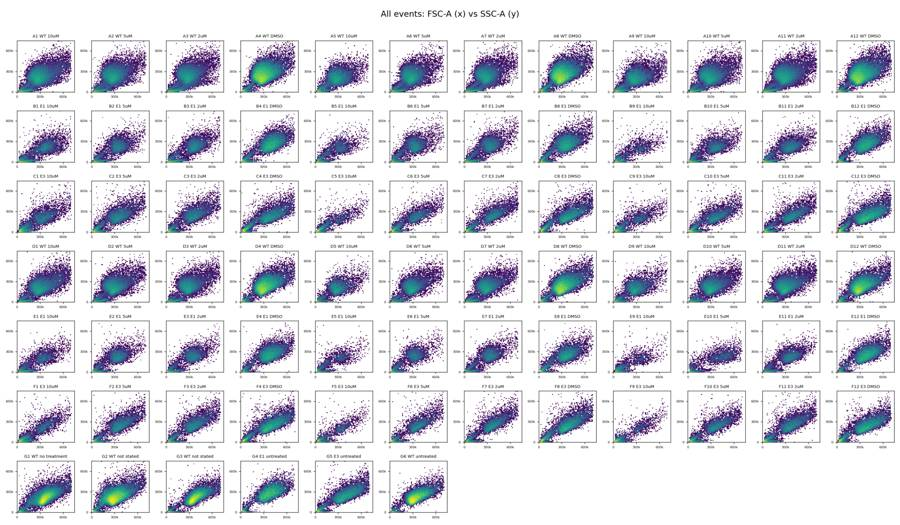
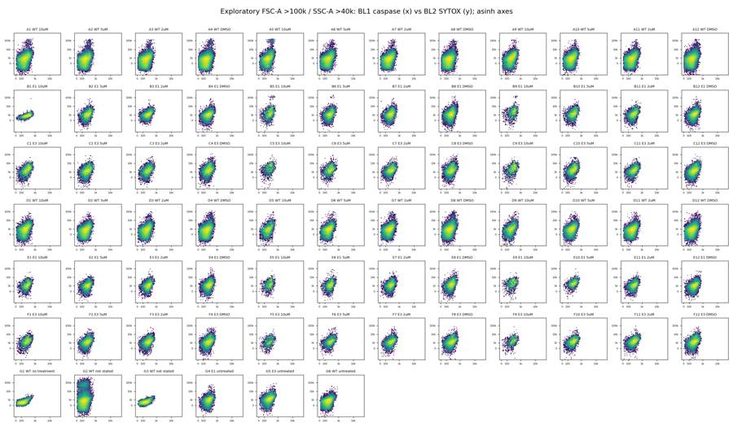
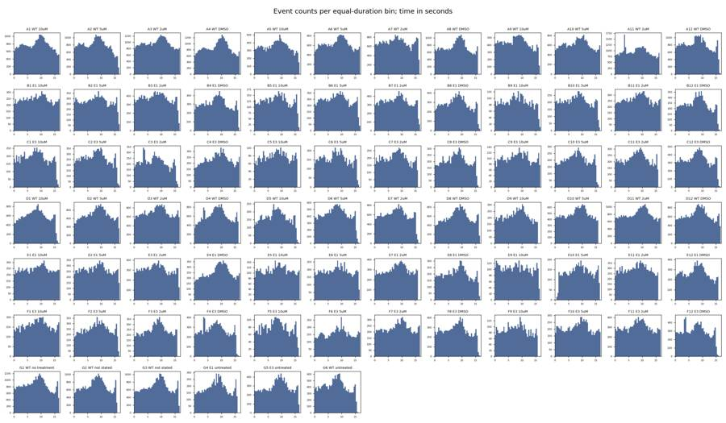
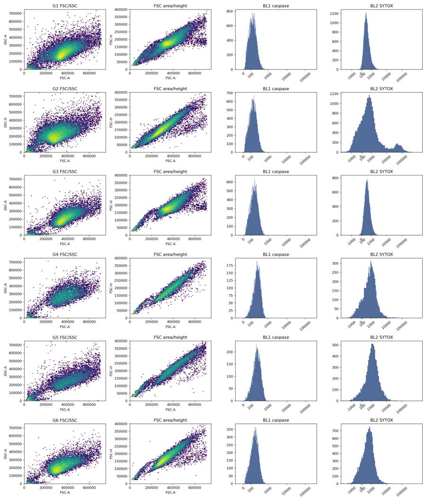
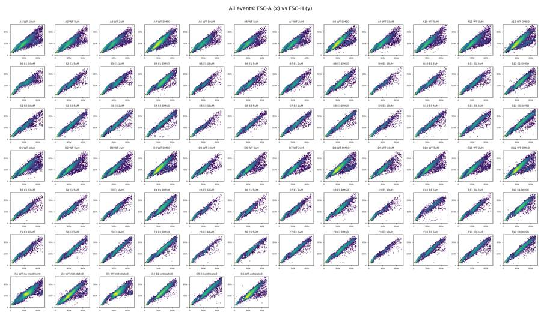
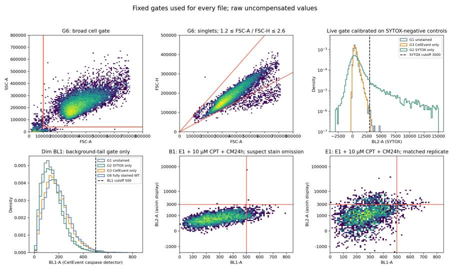
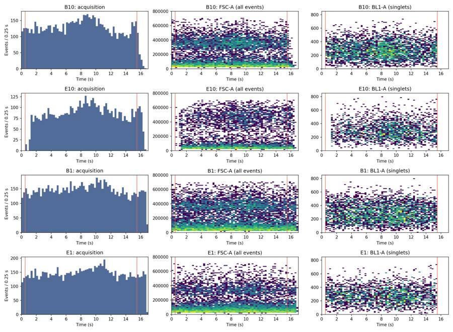
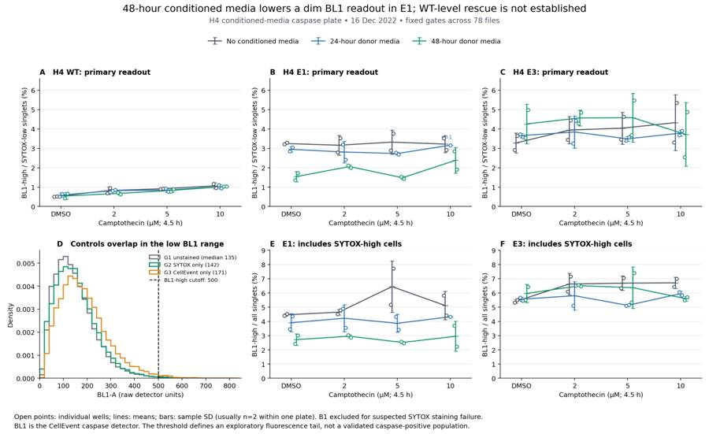
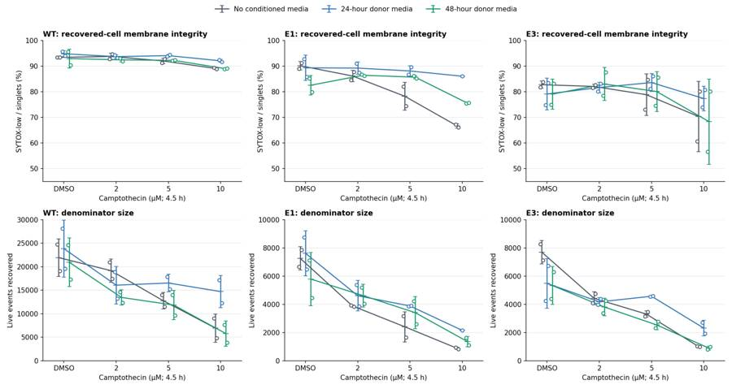

B1_flowkit · GPT-6 Astra · attempt vvPJtBn
Batch fk1 · job fk1_B_base_conditioned_media_flowkit_gpt-6-astra · trial B_base_conditioned_media_flowkit__vvPJtBn. Long tool outputs are cut at 6,000 characters.
Score
0.46
0.46
Minutes
12.0
12.0
Agent cost
$4.01
$4.01
Steps
21
21
Screenshots / images
9
9
1
task prompt (instruction.md)
<environment_context> <cwd>/task</cwd> <shell>bash</shell> <current_date>2026-11-10</current_date> <timezone>Etc/UTC</timezone> <filesystem><workspace_roots><root>/task</root></workspace_roots><permission_profile type="disabled"><file_system type="unrestricted" /></permission_profile></filesystem> </environment_context>
2
user message
# Conditioned-media caspase plate (16-Dec-2022): analyse, conclude, decide
You are the analyst for this experiment: analyse the plate, answer the plan's question, and recommend the next step.
## Inputs (read-only)
| path | content |
|---|---|
| `/task/inputs/plan.md` | Notebook plan for this run: purpose, rationale, reagents, protocol, plate maps, cytometer settings |
| `/task/inputs/plate_layout.csv` | One row per FCS file: `file, well, sample, cell_line, camptothecin, conditioned_media` (plate-map wording) |
| `/task/inputs/raw/` | 78 FCS 3.1 files (Thermo Attune NxT, acquired 16-Dec-2022), wells A1–F12 and G1–G6 |
## Environment
- **Network.** None.
## Channels
Channel names are the labels stored inside the FCS files ($PnS). They may be out of date. Use the plan's reagent list and cytometer settings to decide what each detector measured.
| detector | Name in the FCS file (`$PnS`) |
|---|---|
| FSC-A / FSC-H / FSC-W | FSC-A / FSC-H / FSC-W |
| SSC-A / SSC-H / SSC-W | SSC-A / SSC-H / SSC-W |
| BL1-A / BL1-H / BL1-W | AAV-GFP-GFP-A / AAV-GFP-GFP-H / AAV-GFP-GFP-W |
| BL2-A / BL2-H / BL2-W | AAdvanced livedead-A / AAdvanced livedead-H / AAdvanced livedead-W |
| Time | Time |
## Deliverables (all in `/task/outputs/`)
### 1. `gates.xml`
- Your gating strategy as GatingML 2.0, written with `flowkit.export_gatingml` (see *Software*). It must load with `flowkit.parse_gating_xml("/task/outputs/gates.xml")`.
- Every population in `counts.csv` except `all_events` must be a gate in this file with exactly the same name.
- These gates must be the ones that produced `counts.csv`.
### 2. `counts.csv`
Columns, in order: `file, well, population, role, parent, count, pct_of_parent`.
**Rows**
- One row per FCS file × population, covering all 78 files.
- Every file has the same population set.
**Columns**
- `file`: exact FCS file name. `well`: as in `plate_layout.csv`.
- `population`: your gate names (no commas). Each file also has one row with `population` = `all_events`, `role` = `other`, `parent` = `none`, `count` = total events and `pct_of_parent` empty.
- `role` ∈ {`cells`, `singlets`, `live`, `marker_positive`, `other`}.
- Each of `cells`, `singlets`, `live` and `marker_positive` is used by exactly one population, the same population in every file.
- `other` may be used by any number of populations.
- `parent`: the parent population's name (another population of the same file, or `all_events`). Use `none` only for `all_events`.
- `count`: integer number of events in the population.
- `pct_of_parent`: 100 × count / parent count.
### 3. `flags.csv`
Columns, in order: `file, well, issue_type, evidence, decision`. Exactly one row per FCS file (78 rows).
- Flag any well whose data should not be used, with evidence.
- `issue_type` ∈ {`none`, `clog`, `ran_dry`, `too_few_events`, `saturation`, `bad_control`, `mislabel`, `other`}. If a well has several issues, give the main one here and describe the rest in `evidence`.
- `evidence`: required unless `issue_type` = `none`. It must cite at least one number taken from the data.
- `decision` ∈ {`keep`, `keep_with_note`, `exclude`}.
- Wells marked `exclude` must appear in `answer.json` → `excluded_wells` and must not be used in `condition_summary.csv`.
### 4. `condition_summary.csv`
Columns, in order: `condition, wells, n_wells_used, mean, sd, metric_definition, normalisation_applied`. One row per condition you define.
- `condition`: your name for the condition. Names must be unique and contain no commas.
- `wells`: the plate wells used, separated by `;` (e.g. `X1;X2`).
- `n_wells_used`: integer, equal to the number of wells listed.
- `mean`, `sd`: computed across the listed wells, in the units of your metric. Leave `sd` empty when `n_wells_used` = 1.
- `metric_definition`: which population counts form the numerator and the denominator, or another exact definition.
- `normalisation_applied`: `none`, or the exact formula used.
### 5. `figure.png`
The main result chart.
### 6. `report.md`
These headings, in this order: `## Question`, `## Methods`, `## Results`, `## Conclusion`, `## Caveats`, `## Recommendation`.
### 7. `answer.json`
```
{"question": str,
"comparisons": [{"comparison": str, "a": <condition>, "b": <condition>,
"direction": "increase"|"decrease"|"no_clear_change",
"magnitude": str, "confidence": "high"|"medium"|"low"}],
"overall_answer": "yes: ..." | "partial: ..." | "no: ...",
"assay_verdict": "fit_for_purpose"|"needs_optimisation"|"not_fit_for_purpose",
"next_action": <ACTION>,
"next_change": {"what": str, "from": str, "to": str, "why": str},
"excluded_wells": [well IDs],
"caveats": [str]}
```
- `comparisons`: at least one comparison.
- `a` and `b` must be `condition` values from `condition_summary.csv`.
- `direction` describes `a` relative to `b` (`increase` = a higher than b).
- `magnitude` states the size of the difference, with a number.
- `overall_answer` must start with `yes:`, `partial:` or `no:`.
- `next_action` ∈ {`proceed_as_planned`, `repeat_unchanged`, `repeat_with_change`, `optimise_reagent_or_setting`, `change_treatment_or_timing`, `switch_assay`, `stop`}.
- `next_change`: the change you recommend, as an object: `what` (the step, reagent or condition to change), `from` (its value as run), `to` (the value you recommend) and `why`. Use empty strings if you recommend no change.
- `excluded_wells`: well IDs (e.g. `G1`) that have `decision` = `exclude` in `flags.csv`. Use `[]` if there are none.
## Constraints
- Time budget: 5 hours.
- Do not modify anything in `/task/inputs/`.
## Software (FlowKit version of this task)
- **Python 3 with FlowKit 1.2.3** (plus flowio, numpy, pandas, scipy, matplotlib, openpyxl) is installed. There is no graphical analysis program.
- **Load** each file with `flowkit.Sample(path)`. Build **one** `flowkit.GatingStrategy` for all wells, with `flowkit.Dimension` and `flowkit.gates.RectangleGate`, `PolygonGate` or `EllipsoidGate` (no quadrant or Boolean gates).
- **Gate names** must be valid XML IDs: letters, digits and underscores, starting with a letter (no spaces or `+`).
- **One gate per reported population**, named exactly as the population and nested under its parent population (the first population's gate sits at the root). A population's events are its own gate within its parent.
- **Compensation.** Your choice. Every gate dimension must state its `compensation_ref` (`"uncompensated"`, `"FCS"` for the file's own spillover matrix, or the id of a matrix you add to the strategy).
- **Channels.** FlowKit gate dimensions use the detector ID (`$PnN`, e.g. `BL1-A`), not the text label.
- **Transforms.** You may draw gates on transformed axes (for example `flowkit.transforms.LogicleTransform`, added with `add_transform` and referenced by `transformation_ref`).
- **Save** the strategy with `flowkit.export_gatingml(strategy, open("/task/outputs/gates.xml", "wb"))` and check that it reloads with `flowkit.parse_gating_xml`.
- **Counts.** `counts.csv` must be the counts these saved gates give on each file (`strategy.gate_sample(sample)`), with no per-well changes.
- **Looking at data.** Save plots as PNG files and open the image files to view them.
---
## How you work
You work in a **terminal** (bash, working directory `/task`).
- **Inputs** are in `/task/inputs/` (read-only). **Write every deliverable to `/task/outputs/`.** Only that folder is collected for grading.
- **Limits.** There is no limit on the number of actions; the only limit is the time budget above. Save `gates.xml` and your output files early and often.
3
agent
I’ll read the plan, inspect the controls and acquisition quality, then build one gating strategy for the whole plate and use it to answer the experiment’s question. I’ll save the gates, counts, plots and analysis code in `/task/outputs/`.
tool call · exec
const r = await tools.exec_command({cmd:"pwd && rg --files -g 'AGENTS.md' -g '!inputs/raw/**' -g '!outputs/**' /task /installed-agent 2>/dev/null | head -80",max_output_tokens:5000});
text(r);
text(await tools.exec_command({cmd:"ls -la /task && cat /task/inputs/plan.md && head -85 /task/inputs/plate_layout.csv",max_output_tokens:14000}));
text(await tools.clock__curr_time({}));
tool output
Script completed
Wall time 0.1 seconds
Output:
{"chunk_id":"d96f50","wall_time_seconds":0.00000347,"exit_code":0,"original_token_count":2,"output":"/task\n"}
{"chunk_id":"811f67","wall_time_seconds":0.00000185,"exit_code":0,"original_token_count":2871,"output":"total 16\ndrwxr-xr-x 4 root root 4096 Nov 10 16:59 .\ndrwxr-xr-x 21 root root 4096 Nov 10 17:08 ..\ndr-xr-xr-x 3 root root 4096 Nov 10 16:58 inputs\ndrwxr-xr-x 2 root root 4096 Nov 10 16:59 outputs\n# Plan: Caspase activity assay development with progranulin conditioned media (H4 cells)\n\nSource: lab notebook entry (target PGRN; assay development; cell-based; flow; cell type H4). This plan covers the plate acquired on 16-Dec-2022. People's names, and all text written after acquisition, have been removed.\n\n## Purpose\nTo determine if progranulin conditioned media can restore wild-type levels of caspase activity in H4 GRN KO cells.\n\n## Rationale\nPrevious literature evidence suggests that applying exogenous progranulin to cells can restore molecular phenotypes in progranulin deficient lines. Our previous experiment with caspase activity on H4 GRN WT and KO cells showed that GRN KO lines had increased caspase activity. This difference was enhanced after campothesin challenge in both GRN WT and KO cells. In this experiment, we will determine if applying conditioned media from WT cell lines onto KO lines can reduce caspase activity closer to WT levels.\n\n## Materials\n- H4 WT cells\n- H4 PGRN KO E1\n- H4 PGRN KO E3\n- H4 media (DMEM + 10% FBS)\n- CellEvent Caspase-3/7 Green Flow Cytometry Assay Kit\n- SYTOX AAdvanced Dead Cell Stain\n- Camptothecin\n\n## Protocol\n\n### 2022-12-12: conditioned-media donor plate\n- Passage WT H4 cells into 96 well plate (10K/well). This plate is the one the media is collected from.\n\nDonor plate map, as written (12 columns per line):\n\n```\nWT WT WT WT WT WT WT WT WT WT WT WT\nWT WT WT WT WT WT WT WT WT WT WT WT\nWT WT WT WT WT WT WT WT WT WT WT WT\n24hr\nWT WT WT WT WT WT WT WT WT WT WT WT\nWT WT WT WT WT WT WT WT WT WT WT WT\nWT WT WT WT WT WT WT WT WT WT WT WT\n48hr\n```\n\nRed = 24 hr media collection; Purple = 48hr media collection. Cell colours of this map were not preserved in the export.\n\n### 2022-12-13\n2. Collect media from 24hr wells\n3. Spin down at 2000xg for 10min @4C and collect into fresh plate\n\n### 2022-12-14\n4. Collect media from 48hr wells\n5. Spin down at 2000xg for 10min. Collect into fresh plate\n- Passage all H4 lines into 96 well plate for assay (10K/well) according to the assay plate map below.\n\n### Assay plate map\nThe map is as written. Row letters A–H and column numbers 1–12 have been added for orientation.\n\n| | 1 | 2 | 3 | 4 | 5 | 6 | 7 | 8 | 9 | 10 | 11 | 12 |\n|---|---|---|---|---|---|---|---|---|---|---|---|---|\n| A | WT 10uM | WT 5uM | WT 2uM | WT DMSO | WT 10uM | WT 5uM | WT 2uM | WT DMSO | WT 10uM | WT 5uM | WT 2uM | WT DMSO |\n| B | E1 10uM | E1 5uM | E1 2uM | E1 DMSO | E1 10uM | E1 5uM | E1 2uM | E1 DMSO | E1 10uM | E1 5uM | E1 2uM | E1 DMSO |\n| C | E3 10uM | E3 5uM | E3 2uM | E3 DMSO | E3 10uM | E3 5uM | E3 2uM | E3 DMSO | E3 10uM | E3 5uM | E3 2uM | E3 DMSO |\n| D | WT 10uM | WT 5uM | WT 2uM | WT DMSO | WT 10uM | WT 5uM | WT 2uM | WT DMSO | WT 10uM | WT 5uM | WT 2uM | WT DMSO |\n| E | E1 10uM | E1 5uM | E1 2uM | E1 DMSO | E1 10uM | E1 5uM | E1 2uM | E1 DMSO | E1 10uM | E1 5uM | E1 2uM | E1 DMSO |\n| F | E3 10uM | E3 5uM | E3 2uM | E3 DMSO | E3 10uM | E3 5uM | E3 2uM | E3 DMSO | E3 10uM | E3 5uM | E3 2uM | E3 DMSO |\n| G | WT no treatment (no stain) | WT L/D only | WT Caspase only | E1 untreated | E3 untreated | WT untreated | | | | | | |\n| H | 24hr conditioned media | | | | 48hr conditoned media | | | | No condtioned media | | | |\n\nCell colours in the notebook:\n- Rows A–F, columns 1–4: blue (#94B5DD).\n- Rows A–F, columns 5–8: green (#D5F0AD).\n- Rows A–F, columns 9–12: uncoloured.\n- Row G: uncoloured.\n- Row H: \"24hr conditioned media\" is blue; \"48hr conditoned media\" is green; \"No condtioned media\" is uncoloured.\n\n### 2022-12-15\n6. Rinse wells with DMEM and then add conditioned media\n\n### 2022-12-16\n7. Add camptothecin to wells at indicated dose. Incubate for 4.5hr\n8. Run flow\n\n### Staining and acquisition (assay protocol as written in this entry)\n- Aspirate media and wash with PBS\n- Add 150uL trypsin incubate for 5min\n- Add 75uL FBS and collect into 96w round bottom plate\n- spin down 200xg for 5min\n- Add 200uL of Cell Event Caspase 3/7 Detection reagent (1:1000) in flow staining buffer. Incubate for 30min at 37C\n- Prepare SYTOX AAdvanced Dead Cell Stain at 100uM concentration by adding 1000uL DMSO to stain. Mix well\n- During the final 5 minutes of 30min Caspase incubation add 2uL of the 100uM Dead Cell stain (final concentration of 1uM)\n- Analyze the samples without fixing.\n\nFlow cytometer settings: FSC-20; SSC-290; BL1 (caspase)-225, BL2 (AAddvanced Dead Cell Stain)-350\n\n## Acquisition\n- Instrument: Thermo Attune NxT.\n- Date: 16-Dec-2022.\n- Files: 78 FCS files, one per well (A1–F12 and G1–G6).\nfile,well,sample,cell_line,camptothecin,conditioned_media\nCaspase-assay-2-mlk(1)_caspase_Group_A1.fcs,A1,WT 10uM,WT,10uM,24hr conditioned media\nCaspase-assay-2-mlk(1)_caspase_Group_A2.fcs,A2,WT 5uM,WT,5uM,24hr conditioned media\nCaspase-assay-2-mlk(1)_caspase_Group_A3.fcs,A3,WT 2uM,WT,2uM,24hr conditioned media\nCaspase-assay-2-mlk(1)_caspase_Group_A4.fcs,A4,WT DMSO,WT,DMSO,24hr conditioned media\nCaspase-assay-2-mlk(1)_caspase_Group_A5.fcs,A5,WT 10uM,WT,10uM,48hr conditioned media\nCaspase-assay-2-mlk(1)_caspase_Group_A6.fcs,A6,WT 5uM,WT,5uM,48hr conditioned media\nCaspase-assay-2-mlk(1)_caspase_Group_A7.fcs,A7,WT 2uM,WT,2uM,48hr conditioned media\nCaspase-assay-2-mlk(1)_caspase_Group_A8.fcs,A8,WT DMSO,WT,DMSO,48hr conditioned media\nCaspase-assay-2-mlk(1)_caspase_Group_A9.fcs,A9,WT 10uM,WT,10uM,No conditioned media\nCaspase-assay-2-mlk(1)_caspas
… [5,954 more characters not shown]tool call · exec
const r = await tools.exec_command({cmd:"python - <<'PY'\nimport flowkit as fk, inspect\nfrom pathlib import Path\nimport numpy as np\np=sorted(Path('/task/inputs/raw').glob('*.fcs'))[0]\ns=fk.Sample(str(p))\nprint('FlowKit',fk.__version__, 'files',len(list(p.parent.glob('*.fcs'))))\nprint('sample',s.id,'events',s.event_count)\nprint(s.channels.to_string(index=False))\nprint('metadata',s.metadata)\nprint('Sample get events',inspect.signature(s.get_events))\nprint('Dimension',inspect.signature(fk.Dimension))\nprint('Polygon',inspect.signature(fk.gates.PolygonGate))\nprint('Rectangle',inspect.signature(fk.gates.RectangleGate))\nprint('Matrix',inspect.signature(fk.Matrix))\nprint('Logicle',inspect.signature(fk.transforms.LogicleTransform))\nprint('Gate sample',inspect.signature(fk.GatingStrategy.gate_sample))\nprint('Results', [x for x in dir(fk._models.gating_results.GatingResults) if not x.startswith('_')])\ne=s.get_events(source='raw')\nprint('quantiles rows 0 .01 .1 .5 .9 .99 1')\nprint(np.quantile(e,[0,.01,.1,.5,.9,.99,1],axis=0))\nPY","max_output_tokens":9000});
text(r);
tool output
Script completed
Wall time 1.3 seconds
Output:
{"chunk_id":"89c936","wall_time_seconds":1.154676694,"exit_code":0,"original_token_count":1668,"output":"FlowKit 1.2.3 files 78\nsample A1.fcs events 30920\n channel_number pnn pns png pne pnr\n 1 Time Time 1.0 (0.0, 0.0) 67108864.0\n 2 FSC-A FSC-A 1.0 (0.0, 0.0) 1048576.0\n 3 SSC-A SSC-A 1.0 (0.0, 0.0) 1048576.0\n 4 BL1-A AAV-GFP-GFP-A 1.0 (0.0, 0.0) 1048576.0\n 5 BL2-A AAdvanced livedead-A 1.0 (0.0, 0.0) 1048576.0\n 6 FSC-H FSC-H 1.0 (0.0, 0.0) 1048576.0\n 7 SSC-H SSC-H 1.0 (0.0, 0.0) 1048576.0\n 8 BL1-H AAV-GFP-GFP-H 1.0 (0.0, 0.0) 1048576.0\n 9 BL2-H AAdvanced livedead-H 1.0 (0.0, 0.0) 1048576.0\n 10 FSC-W FSC-W 1.0 (0.0, 0.0) 1024.0\n 11 SSC-W SSC-W 1.0 (0.0, 0.0) 1024.0\n 12 BL1-W AAV-GFP-GFP-W 1.0 (0.0, 0.0) 1024.0\n 13 BL2-W AAdvanced livedead-W 1.0 (0.0, 0.0) 1024.0\nmetadata {'par': '13', 'tot': '30920', 'mode': 'L', 'datatype': 'F', 'byteord': '1,2,3,4', 'p1f': 'NA', 'p1l': 'NA', 'p1s': 'Time', 'p1v': 'NA', 'p1n': 'Time', 'p1b': '32', 'p1r': '67108864', 'p1e': '0,0', 'p2f': 'NA', 'p2l': '488', 'p2s': 'FSC-A', 'p2v': '20', 'p2n': 'FSC-A', 'p2b': '32', 'p2r': '1048576', 'p2e': '0,0', 'p3f': 'NA', 'p3l': '488', 'p3s': 'SSC-A', 'p3v': '290', 'p3n': 'SSC-A', 'p3b': '32', 'p3r': '1048576', 'p3e': '0,0', 'p4f': 'NA', 'p4l': '488', 'p4s': 'AAV-GFP-GFP-A', 'p4v': '225', 'p4n': 'BL1-A', 'p4b': '32', 'p4r': '1048576', 'p4e': '0,0', 'p5f': 'NA', 'p5l': '488', 'p5s': 'AAdvanced livedead-A', 'p5v': '350', 'p5n': 'BL2-A', 'p5b': '32', 'p5r': '1048576', 'p5e': '0,0', 'p6f': 'NA', 'p6l': '488', 'p6s': 'FSC-H', 'p6v': '20', 'p6n': 'FSC-H', 'p6b': '32', 'p6r': '1048576', 'p6e': '0,0', 'p7f': 'NA', 'p7l': '488', 'p7s': 'SSC-H', 'p7v': '290', 'p7n': 'SSC-H', 'p7b': '32', 'p7r': '1048576', 'p7e': '0,0', 'p8f': 'NA', 'p8l': '488', 'p8s': 'AAV-GFP-GFP-H', 'p8v': '225', 'p8n': 'BL1-H', 'p8b': '32', 'p8r': '1048576', 'p8e': '0,0', 'p9f': 'NA', 'p9l': '488', 'p9s': 'AAdvanced livedead-H', 'p9v': '350', 'p9n': 'BL2-H', 'p9b': '32', 'p9r': '1048576', 'p9e': '0,0', 'p10f': 'NA', 'p10l': '488', 'p10s': 'FSC-W', 'p10v': '20', 'p10n': 'FSC-W', 'p10b': '32', 'p10r': '1024', 'p10e': '0,0', 'p11f': 'NA', 'p11l': '488', 'p11s': 'SSC-W', 'p11v': '290', 'p11n': 'SSC-W', 'p11b': '32', 'p11r': '1024', 'p11e': '0,0', 'p12f': 'NA', 'p12l': '488', 'p12s': 'AAV-GFP-GFP-W', 'p12v': '225', 'p12n': 'BL1-W', 'p12b': '32', 'p12r': '1024', 'p12e': '0,0', 'p13f': 'NA', 'p13l': '488', 'p13s': 'AAdvanced livedead-W', 'p13v': '350', 'p13n': 'BL2-W', 'p13b': '32', 'p13r': '1024', 'p13e': '0,0', 'cyt': '0A29009 Attune NxT Acoustic Focusing Cytometer (Lasers: BRV6Y)', 'sys': 'SEA11065ATTUNE Microsoft Windows 10 Enterprise LTSC', 'spillover': '6,BL1-A,BL2-A,BL1-H,BL2-H,BL1-W,BL2-W,1.000000,0.000000,0.000000,0.000000,0.000000,0.000000,0.000000,1.000000,0.000000,0.000000,0.000000,0.000000,0.000000,0.000000,1.000000,0.000000,0.000000,0.000000,0.000000,0.000000,0.000000,1.000000,0.000000,0.000000,0.000000,0.000000,0.000000,0.000000,1.000000,0.000000,0.000000,0.000000,0.000000,0.000000,0.000000,1.000000', 'btim': '14:27:29', 'cells': 'NA', 'com': 'NA', 'cytsn': '2AFC228071019', 'date': '16-Dec-2022', 'etim': '14:27:46', 'exp': 'NA', 'fil': 'A1.fcs', 'inst': 'NA', 'originality': 'Original', 'lost': '0', 'op': 'Jeff Huang', 'plateid': 'NA', 'platename': 'Caspase-assay-2-mlk(1)', 'proj': 'caspase', 'smno': 'Group', 'src': 'NA', 'timestep': '0.001', 'vol': '140000', 'wellid': 'A1', '#coincidentcount': '1385', '#flowrate': '500', '#laser1asf': '1.07', '#laser1color': 'Blue', '#laser1delay': '1100', '#laser2asf': '1.09', '#laser2color': 'Red', '#laser2delay': '1516', '#laser3asf': '1.04', '#laser3color': 'Violet', '#laser3delay': '702', '#laser4asf': '1.00', '#laser4color': 'Yellow', '#laser4delay': '273', '#laserconfig': 'BRV6Y', '#p12label': 'GFP', '#p12target': 'AAV-GFP', '#p13target': 'AAdvanced livedead', '#p1label': 'NA', '#p1target': 'NA', '#p4label': 'GFP', '#p4target': 'AAV-GFP', '#p5target': 'AAdvanced livedead', '#p8label': 'GFP', '#p8target': 'AAV-GFP', '#p9target': 'AAdvanced livedead', '#ptdate': '16-Dec-2022', '#ptresult': 'Pass', '#tr1': 'OR_FSC,25000', '#widththreshold': '1000', '#winext': '0', 'hostid': 'SEA11065ATTUNE', 'begindata': '000000008192', 'enddata': '000001616031', 'nextdata': '000000000000', 'beginstext': '000000000000', 'endstext': '000000000000', 'beginanalysis': '000000000000', 'endanalysis': '000000000000'}\nSample get events (source='xform', subsample=False, event_mask=None)\nDimension (dimension_id, compensation_ref='uncompensated', transformation_ref=None, range_min=None, range_max=None)\nPolygon (gate_name, dimensions, vertices, use_complement=False)\nRectangle (gate_name, dimensions, use_complement=False)\nMatrix (spill_data_or_file, detectors, fluorochromes=None, null_channels=None)\nLogicle (param_t, param_w, param_m, param_a)\nGate sample (self, sample, cache_events=False, verbose=False)\nResults ['get_gate_absolute_percent', 'get_gate_count', 'get_gate_membership', 'get_gate_relative_percent']\nquantiles rows 0 .01 .1 .5 .9 .99 1\n[[ 1.4000000e-02 1.3280000e+04 -2.2828000e+04 4.0000000e+00\n -1.9281000e+04 2.5128000e+04 1.0000000e+02 2.3000000e+01\n 0.0000000e+00 4.1000000e+01 0.0000000e+00 0.0000000e+00\n 0.0000000e+00]\n [ 2.2800000e-01 2.6183000e+04 1.6055700e+03 1.1000000e+01\n -1.1690000e+03 2.6290950e+04 2.1061900e+03 4.5000000e+01\n 9.1000000e+01 5.2000000e+01 2.4000000e+01 0.0000000e+00\n 0.0000000e+00]\n [ 1.9079000e+00 4.1950600e+04 4.3378000e+03 4.4000000e+01\n -4.1500000e+02 3.9466000e+04 4.1869000e+03 6.9000000e+01\n 2.8500000e+02 7.6000000e+01 3.60
… [880 more characters not shown]5
agent
The plan identifies BL1 as the CellEvent caspase detector and BL2 as the SYTOX dead-cell detector; the GFP label in the files is stale. The first well has very little BL1 signal, so I’ll check the controls and the full plate before treating any apparent difference as a caspase response.
tool call · exec
text(await tools.exec_command({cmd:"mkdir -p /task/outputs/diagnostics && python - <<'PY'\nimport inspect,flowkit as fk\nprint(inspect.getsource(fk.Sample.get_events))\nprint(inspect.getsource(fk.GatingStrategy.add_gate))\nprint(inspect.getsource(fk._models.gating_results.GatingResults.get_gate_membership))\nPY","max_output_tokens":7000}));
text(await tools.apply_patch("*** Begin Patch\n*** Add File: /task/outputs/explore.py\n+from pathlib import Path\n+import json\n+import flowkit as fk\n+import numpy as np\n+import pandas as pd\n+import matplotlib\n+matplotlib.use('Agg')\n+import matplotlib.pyplot as plt\n+from matplotlib.colors import LogNorm\n+\n+ROOT=Path('/task')\n+OUT=ROOT/'outputs'\n+layout=pd.read_csv(ROOT/'inputs/plate_layout.csv')\n+data={}\n+stats=[]\n+for r in layout.itertuples():\n+ s=fk.Sample(str(ROOT/'inputs/raw'/r.file))\n+ e=s.get_events(source='raw')\n+ data[r.well]=e\n+ d={'file':r.file,'well':r.well,'n':len(e),'start':s.metadata['btim'],\n+ 'end':s.metadata['etim'],'time_max':e[:,0].max(),\n+ 'metadata_well':s.metadata['wellid'],'coincident':s.metadata.get('#coincidentcount'),\n+ 'events_lost':s.metadata.get('lost')}\n+ for j,ch in enumerate(s.pnn_labels):\n+ for q in [0,.01,.1,.5,.9,.95,.99,.999,1]:\n+ d[f'{ch}_q{q:g}']=np.quantile(e[:,j],q)\n+ d[f'{ch}_saturated']=int((e[:,j]>=float(s.metadata[f'p{j+1}r'])-1).sum())\n+ stats.append(d)\n+pd.DataFrame(stats).to_csv(OUT/'diagnostics/raw_stats.csv',index=False)\n+np.savez_compressed(OUT/'diagnostics/events.npz',**data)\n+\n+for mode in ['scatter','singlets','fluorescence','time']:\n+ fig,axs=plt.subplots(7,12,figsize=(24,14),squeeze=False)\n+ for ax in axs.flat: ax.set_visible(False)\n+ for r in layout.itertuples():\n+ ax=axs[ord(r.well[0])-65,int(r.well[1:])-1]\n+ ax.set_visible(True)\n+ e=data[r.well]\n+ ax.set_title(f'{r.well} {r.cell_line} {r.camptothecin}',fontsize=8)\n+ if mode=='scatter':\n+ ax.hist2d(e[:,1],e[:,2],bins=65,range=[[0,750000],[0,750000]],norm=LogNorm(),cmap='viridis')\n+ ax.set_xticks([0,300000,600000],labels=['0','300k','600k'])\n+ ax.set_yticks([0,300000,600000],labels=['0','300k','600k'])\n+ elif mode=='singlets':\n+ ax.hist2d(e[:,1],e[:,5],bins=65,range=[[0,750000],[0,400000]],norm=LogNorm(),cmap='viridis')\n+ ax.set_xticks([0,300000,600000],labels=['0','300k','600k'])\n+ ax.set_yticks([0,150000,300000],labels=['0','150k','300k'])\n+ elif mode=='fluorescence':\n+ keep=(e[:,1]>100000)&(e[:,2]>40000)\n+ ax.hist2d(np.arcsinh(e[keep,3]/100),np.arcsinh(e[keep,4]/500),bins=65,range=[[-.3,7],[-3,8]],norm=LogNorm(),cmap='viridis')\n+ ax.set_xticks(np.arcsinh(np.array([0,100,1000,10000])/100),labels=['0','100','1k','10k'])\n+ ax.set_yticks(np.arcsinh(np.array([0,1000,10000,100000])/500),labels=['0','1k','10k','100k'])\n+ else:\n+ ax.hist(e[:,0],bins=40,color='#526c9a')\n+ ax.set_xlim(0,max(17,e[:,0].max()))\n+ ax.tick_params(labelsize=6)\n+ titles={'scatter':'All events: FSC-A (x) vs SSC-A (y)',\n+ 'singlets':'All events: FSC-A (x) vs FSC-H (y)',\n+ 'fluorescence':'Exploratory FSC-A >100k / SSC-A >40k: BL1 caspase (x) vs BL2 SYTOX (y); asinh axes',\n+ 'time':'Event counts per equal-duration bin; time in seconds'}\n+ fig.suptitle(titles[mode],fontsize=16)\n+ fig.tight_layout(rect=[0,0,1,.97])\n+ fig.savefig(OUT/f'diagnostics/plate_{mode}.png',dpi=130)\n+ plt.close(fig)\n+\n+fig,axs=plt.subplots(6,4,figsize=(17,20))\n+for i,well in enumerate(['G1','G2','G3','G4','G5','G6']):\n+ e=data[well]\n+ keep=(e[:,1]>100000)&(e[:,2]>40000)\n+ axs[i,0].hist2d(e[:,1],e[:,2],bins=100,range=[[0,750000],[0,750000]],norm=LogNorm())\n+ axs[i,0].set(title=f'{well} FSC/SSC',xlabel='FSC-A',ylabel='SSC-A')\n+ axs[i,1].hist2d(e[:,1],e[:,5],bins=100,range=[[0,750000],[0,400000]],norm=LogNorm())\n+ axs[i,1].set(title='FSC area/height',xlabel='FSC-A',ylabel='FSC-H')\n+ for j,col,cofactor in [(2,3,100),(3,4,500)]:\n+ x=np.arcsinh(e[keep,col]/cofactor)\n+ axs[i,j].hist(x,bins=100,color='#526c9a')\n+ tickvals=np.array([-1000,0,100,1000,10000,100000])\n+ axs[i,j].set_xticks(np.arcsinh(tickvals/cofactor),labels=tickvals,rotation=40)\n+ axs[i,j].set_xlim((-1,9) if col==3 else (-3,9))\n+ axs[i,j].set_title('BL1 caspase' if col==3 else 'BL2 SYTOX')\n+fig.tight_layout()\n+fig.savefig(OUT/'diagnostics/controls_raw.png',dpi=130)\n+plt.close(fig)\n+print(pd.DataFrame(stats)[['well','n','start','time_max','BL1-A_q0.5','BL1-A_q0.99','BL1-A_q1','BL2-A_q0.5','BL2-A_q0.99','BL1-W_q1']].to_string(index=False))\n*** End Patch"));
text(await tools.exec_command({cmd:"python /task/outputs/explore.py","yield_time_ms":1000,"max_output_tokens":8000}));
tool output
Script completed
Wall time 1.9 seconds
Output:
{"chunk_id":"79d8c4","wall_time_seconds":0.555245544,"exit_code":0,"original_token_count":1750,"output":" def get_events(self, source='xform', subsample=False, event_mask=None):\n \"\"\"\n Returns a NumPy array of event data.\n\n Note: This method returns the array directly, not a copy of the array. Be careful if you\n are planning to modify returned event data, and make a copy of the array when appropriate.\n\n :param source: 'orig', 'raw', 'comp', 'xform' for whether the original (no gain applied),\n raw (orig + gain), compensated (raw + comp), or transformed (comp + xform) events will\n be returned\n :param subsample: Whether to return all events or just the subsampled\n events. Default is False (all events)\n :param event_mask: Filter Sample events by a given Boolean array (events marked\n True will be returned). Can be combined with the subsample option.\n :return: NumPy array of event data\n \"\"\"\n if source == 'xform':\n events = self._get_transformed_events()\n elif source == 'comp':\n events = self._get_comp_events()\n elif source == 'raw':\n events = self._get_raw_events()\n elif source == 'orig':\n events = self._get_orig_events()\n else:\n raise ValueError(\"source must be one of 'orig', 'raw', 'comp', or 'xform'\")\n \n if subsample:\n events = events[self.subsample_indices]\n\n # if event mask is given, subsample it too\n if event_mask is not None:\n event_mask = event_mask[self.subsample_indices]\n\n if event_mask is not None:\n events = events[event_mask]\n\n return events\n\n def add_gate(self, gate, gate_path, sample_id=None):\n \"\"\"\n Add a gate to the gating strategy, see `gates` module. The gate ID and gate path\n must be unique in the gating strategy. Custom sample gates may be added by specifying\n an optional sample ID. Note, the gate & gate path must already exist prior to adding\n custom sample gates.\n\n :param gate: instance from a subclass of the Gate class\n :param gate_path: complete ordered tuple of gate names for unique set of gate ancestors\n :param sample_id: text string for specifying given gate as a custom Sample gate\n\n :return: None\n \"\"\"\n if not isinstance(gate, Gate):\n raise TypeError(\"gate must be a sub-class of the Gate class\")\n\n # Verify gate_path is a tuple, else user gets a cryptic error for\n # something that is simple to fix\n if not isinstance(gate_path, tuple):\n raise TypeError(\"gate_path must be a tuple not %s\" % str(type(gate_path)))\n\n # make string representation of parent path, used for anytree Resolver later\n parent_abs_gate_path = \"/\" + \"/\".join(gate_path)\n\n # Verify gate name is not \".\" or \"..\" as these are incompatible w/ the\n # current version of anytree (see open issue https://github.com/c0fec0de/anytree/issues/269)\n if gate.gate_name in ['.', '..']:\n raise GateTreeError(\n \"Gate name '%s' is incompatible with FlowKit. Gate was found in path: %s\" %\n (gate.gate_name, parent_abs_gate_path)\n )\n\n # We need the parent gate (via its node) for 2 reasons:\n # 1) To verify the parent exists when creating a new node\n # 2) Verify the parent is NOT a QuadrantGate, as only\n # Quadrants of a QuadrantGate can be a parent.\n try:\n parent_node = self.resolver.get(self._gate_tree, parent_abs_gate_path)\n except anytree.ResolverError:\n # this should never happen unless someone messed with the gate tree\n raise GateTreeError(\"Parent gate %s doesn't exist\" % parent_abs_gate_path)\n\n # If parent is root, then there is no parent gate\n if parent_node.name != 'root':\n if isinstance(parent_node.gate, fk_gates.QuadrantGate):\n raise GateTreeError(\n \"Parent gate %s is a QuadrantGate and cannot be used as a parent gate directly. \"\n \"Only an individual Quadrant can be used as a parent.\"\n )\n\n # determine if gate already exists with name and path\n abs_gate_path = list(gate_path) + [gate.gate_name]\n abs_gate_path = \"/\" + \"/\".join(abs_gate_path)\n try:\n node = self.resolver.get(self._gate_tree, abs_gate_path)\n except anytree.ResolverError:\n # this is expected if the gate doesn't already exist\n node = None\n\n if node is not None:\n # A node was found. If no sample ID is given, the gate\n # already exists and is the template gate.\n if sample_id is None:\n raise GateTreeError(\"Gate %s already exists\" % abs_gate_path)\n else:\n # Attempt to create sample custom gate, GateNode.add_gate will\n # raise a GateTreeError if it already exists.\n node.add_custom_gate(sample_id, gate)\n else:\n # We need to create a new node in the tree.\n GateNode(gate, parent_node)\n self._rebuild_dag()\n\n def get_gate_membership(self, gate_name, gate_path=None):\n \"\"\"\n Retrieve a boolean array indicating gate membership for the events in the GatingResults sample.\n Note, the same gate ID may be found in multiple gate paths, i.e. the gate ID can be ambiguous.\n In this case, specify the full gate path to retrieve gate indices.\n\n :param gate_name: text string of a gate name\n :param gate_path: A tuple of ancestor gate IDs for the given gate ID. Al
… [1,464 more characters not shown]tool call · exec
text(await tools.write_stdin({session_id:6379,chars:"","yield_time_ms":1000,"max_output_tokens":10000}));
tool output
Script completed
Wall time 5.0 seconds
Output:
{"chunk_id":"819e30","wall_time_seconds":5.001045893,"session_id":6379,"original_token_count":0,"output":""}tool call · exec
text(await tools.exec_command({cmd:"ls -lh /task/outputs/diagnostics && python - <<'PY'\nimport pandas as pd\ns=pd.read_csv('/task/outputs/diagnostics/raw_stats.csv')\ncols=['well','n','start','time_max','BL1-A_q0.5','BL1-A_q0.99','BL1-A_q1','BL2-A_q0.5','BL2-A_q0.99','BL1-W_q1']\nprint(s[cols].to_string(index=False))\nPY","max_output_tokens":8500}));
tool output
Script completed
Wall time 0.2 seconds
Output:
{"chunk_id":"0565d9","wall_time_seconds":0.055007381,"exit_code":0,"original_token_count":2064,"output":"total 40M\n-rw-r--r-- 1 root root 38M Nov 10 17:09 events.npz\n-rw-r--r-- 1 root root 344K Nov 10 17:09 plate_fluorescence.png\n-rw-r--r-- 1 root root 511K Nov 10 17:09 plate_scatter.png\n-rw-r--r-- 1 root root 408K Nov 10 17:09 plate_singlets.png\n-rw-r--r-- 1 root root 239K Nov 10 17:09 plate_time.png\n-rw-r--r-- 1 root root 92K Nov 10 17:09 raw_stats.csv\nwell n start time_max BL1-A_q0.5 BL1-A_q0.99 BL1-A_q1 BL2-A_q0.5 BL2-A_q0.99 BL1-W_q1\n A1 30920 14:27:29 16.721 152.0 539.00 805.0 418.0 14435.62 0.0\n A2 31266 14:28:13 16.571 147.0 513.00 795.0 365.0 15966.35 0.0\n A3 38748 14:28:57 16.778 142.0 509.00 804.0 327.0 9448.65 0.0\n A4 34861 14:29:41 16.734 159.0 474.00 797.0 403.0 12930.40 0.0\n A5 14011 14:30:24 16.581 160.0 528.90 750.0 522.0 72871.10 0.0\n A6 25118 14:31:08 16.726 151.0 521.00 794.0 439.0 12494.70 0.0\n A7 27544 14:31:52 16.495 149.0 506.00 803.0 409.0 10087.40 0.0\n A8 30067 14:32:36 15.853 159.0 482.00 810.0 468.0 10433.56 0.0\n A9 17224 14:33:19 16.515 169.0 537.00 769.0 524.0 10492.70 0.0\n A10 24604 14:34:03 16.639 164.0 527.00 785.0 518.0 10698.43 0.0\n A11 38346 14:34:47 16.331 156.0 517.00 810.0 439.0 8826.95 0.0\n A12 31708 14:35:31 16.608 161.0 492.93 787.0 565.0 13294.69 0.0\n B1 9849 14:36:14 16.792 142.0 596.00 803.0 242.0 1896.52 0.0\n B2 10963 14:36:58 16.731 151.0 561.00 804.0 502.0 9008.66 0.0\n B3 14921 14:37:42 16.753 153.0 560.80 802.0 477.0 5912.40 0.0\n B4 12172 14:38:25 16.570 222.0 579.58 801.0 893.0 8150.51 0.0\n B5 5068 14:39:09 16.550 152.0 553.00 712.0 664.0 15837.82 0.0\n B6 9638 14:39:53 16.830 173.0 558.63 781.0 677.5 10187.35 0.0\n B7 13360 14:40:37 16.719 161.0 536.00 795.0 572.0 9320.10 0.0\n B8 11210 14:41:21 16.671 209.0 563.00 796.0 987.0 14192.39 0.0\n B9 3505 14:42:04 16.823 150.0 579.96 770.0 837.0 16369.48 0.0\n B10 8268 14:42:48 16.540 168.0 579.00 766.0 697.0 10491.48 0.0\n B11 10609 14:43:32 16.705 168.0 567.00 788.0 640.0 8845.08 0.0\n B12 9382 14:44:16 16.354 232.0 604.38 812.0 1024.0 13613.49 0.0\n C1 7495 14:44:59 16.445 170.0 610.06 823.0 1034.0 10116.24 0.0\n C2 10263 14:45:43 16.756 174.0 602.38 819.0 927.0 11578.08 0.0\n C3 8563 14:46:27 16.210 180.0 610.38 805.0 1018.0 12382.18 0.0\n C4 9241 14:47:10 16.738 189.0 612.00 813.0 1298.0 15435.00 0.0\n C5 3151 14:47:55 15.847 147.0 594.00 818.0 1405.0 13221.50 0.0\n C6 6099 14:48:38 16.406 174.0 590.00 810.0 1161.0 12299.00 0.0\n C7 8001 14:49:23 15.962 180.0 631.00 791.0 1089.0 11015.00 0.0\n C8 8215 14:50:06 16.038 199.0 632.58 806.0 1370.0 17394.20 0.0\n C9 4067 14:50:50 16.742 159.0 591.68 812.0 1298.0 13443.38 0.0\n C10 8011 14:51:33 16.063 179.0 622.80 828.0 1225.0 12843.40 0.0\n C11 9008 14:52:18 15.913 184.0 612.93 801.0 1023.0 9356.93 0.0\n C12 13163 14:53:01 16.730 212.0 629.76 809.0 1202.0 12755.68 0.0\n D1 22778 14:53:45 16.576 167.0 538.00 781.0 549.0 8322.45 5.0\n D2 27593 14:54:29 16.720 166.0 502.08 781.0 461.0 7105.08 0.0\n D3 27824 14:55:13 16.714 169.0 501.00 781.0 467.0 8329.55 0.0\n D4 24551 14:55:57 16.284 179.0 508.00 760.0 561.0 12471.00 0.0\n D5 6454 14:56:40 16.346 178.0 529.00 783.0 645.0 11112.99 0.0\n D6 17066 14:57:24 16.372 169.0 512.35 753.0 566.0 8751.15 0.0\n D7 23253 14:58:08 16.449 171.0 504.00 802.0 592.0 10189.24 0.0\n D8 23299 14:58:51 16.660 177.0 517.00 815.0 748.0 20418.00 0.0\n D9 8616 14:59:36 15.873 172.0 541.00 739.0 679.5 10710.20 0.0\n D10 19657 15:00:20 15.928 179.0 529.00 751.0 625.0 8102.44 0.0\n D11 31867 15:01:02 16.691 176.0 515.34 766.0 528.0 6532.08 0.0\n D12 25256 15:01:46 16.702 172.0 505.00 823.0 677.0 11323.85 0.0\n E1 9821 15:02:30 16.765 143.0 521.80 767.0 494.0 6545.80 0.0\n E2 10681 15:03:14 16.762 172.0 540.20 799.0 601.0 7355.40 0.0\n E3 12311 15:03:58 16.697 170.0 524.00 774.0 559.0 8232.80 0.0\n E4 10059 15:04:41 16.771 244.0 589.00 792.0 1080.0 10798.14 0.0\n E5 4437 15:05:25 16.629 147.0 503.00 709.0 655.0 8487.56 0.0\n E6 7547 15:06:09 16.611
… [2,497 more characters not shown]tool call · exec
const rs = await Promise.allSettled([
tools.view_image({path:"/task/outputs/diagnostics/plate_scatter.png"}),
tools.view_image({path:"/task/outputs/diagnostics/plate_fluorescence.png"}),
tools.view_image({path:"/task/outputs/diagnostics/plate_time.png"})
]);
for (const r of rs) { if(r.status==="fulfilled") image(r.value.image_url); else text(String(r.reason)); }
text(await tools.write_stdin({session_id:6379,chars:"","yield_time_ms":1000,"max_output_tokens":4000}));
tool output
Script completed Wall time 0.0 seconds Output:



{"chunk_id":"36868d","wall_time_seconds":0.00000328,"exit_code":0,"original_token_count":1975,"output":"well n start time_max BL1-A_q0.5 BL1-A_q0.99 BL1-A_q1 BL2-A_q0.5 BL2-A_q0.99 BL1-W_q1\n A1 30920 14:27:29 16.721 152.0 539.00 805.0 418.0 14435.62 0.0\n A2 31266 14:28:13 16.571 147.0 513.00 795.0 365.0 15966.35 0.0\n A3 38748 14:28:57 16.778 142.0 509.00 804.0 327.0 9448.65 0.0\n A4 34861 14:29:41 16.734 159.0 474.00 797.0 403.0 12930.40 0.0\n A5 14011 14:30:24 16.581 160.0 528.90 750.0 522.0 72871.10 0.0\n A6 25118 14:31:08 16.726 151.0 521.00 794.0 439.0 12494.70 0.0\n A7 27544 14:31:52 16.495 149.0 506.00 803.0 409.0 10087.40 0.0\n A8 30067 14:32:36 15.853 159.0 482.00 810.0 468.0 10433.56 0.0\n A9 17224 14:33:19 16.515 169.0 537.00 769.0 524.0 10492.70 0.0\n A10 24604 14:34:03 16.639 164.0 527.00 785.0 518.0 10698.43 0.0\n A11 38346 14:34:47 16.331 156.0 517.00 810.0 439.0 8826.95 0.0\n A12 31708 14:35:31 16.608 161.0 492.93 787.0 565.0 13294.69 0.0\n B1 9849 14:36:14 16.792 142.0 596.00 803.0 242.0 1896.52 0.0\n B2 10963 14:36:58 16.731 151.0 561.00 804.0 502.0 9008.66 0.0\n B3 14921 14:37:42 16.753 153.0 560.80 802.0 477.0 5912.40 0.0\n B4 12172 14:38:25 16.570 222.0 579.58 801.0 893.0 8150.51 0.0\n B5 5068 14:39:09 16.550 152.0 553.00 712.0 664.0 15837.82 0.0\n B6 9638 14:39:53 16.830 173.0 558.63 781.0 677.5 10187.35 0.0\n B7 13360 14:40:37 16.719 161.0 536.00 795.0 572.0 9320.10 0.0\n B8 11210 14:41:21 16.671 209.0 563.00 796.0 987.0 14192.39 0.0\n B9 3505 14:42:04 16.823 150.0 579.96 770.0 837.0 16369.48 0.0\n B10 8268 14:42:48 16.540 168.0 579.00 766.0 697.0 10491.48 0.0\n B11 10609 14:43:32 16.705 168.0 567.00 788.0 640.0 8845.08 0.0\n B12 9382 14:44:16 16.354 232.0 604.38 812.0 1024.0 13613.49 0.0\n C1 7495 14:44:59 16.445 170.0 610.06 823.0 1034.0 10116.24 0.0\n C2 10263 14:45:43 16.756 174.0 602.38 819.0 927.0 11578.08 0.0\n C3 8563 14:46:27 16.210 180.0 610.38 805.0 1018.0 12382.18 0.0\n C4 9241 14:47:10 16.738 189.0 612.00 813.0 1298.0 15435.00 0.0\n C5 3151 14:47:55 15.847 147.0 594.00 818.0 1405.0 13221.50 0.0\n C6 6099 14:48:38 16.406 174.0 590.00 810.0 1161.0 12299.00 0.0\n C7 8001 14:49:23 15.962 180.0 631.00 791.0 1089.0 11015.00 0.0\n C8 8215 14:50:06 16.038 199.0 632.58 806.0 1370.0 17394.20 0.0\n C9 4067 14:50:50 16.742 159.0 591.68 812.0 1298.0 13443.38 0.0\n C10 8011 14:51:33 16.063 179.0 622.80 828.0 1225.0 12843.40 0.0\n C11 9008 14:52:18 15.913 184.0 612.93 801.0 1023.0 9356.93 0.0\n C12 13163 14:53:01 16.730 212.0 629.76 809.0 1202.0 12755.68 0.0\n D1 22778 14:53:45 16.576 167.0 538.00 781.0 549.0 8322.45 5.0\n D2 27593 14:54:29 16.720 166.0 502.08 781.0 461.0 7105.08 0.0\n D3 27824 14:55:13 16.714 169.0 501.00 781.0 467.0 8329.55 0.0\n D4 24551 14:55:57 16.284 179.0 508.00 760.0 561.0 12471.00 0.0\n D5 6454 14:56:40 16.346 178.0 529.00 783.0 645.0 11112.99 0.0\n D6 17066 14:57:24 16.372 169.0 512.35 753.0 566.0 8751.15 0.0\n D7 23253 14:58:08 16.449 171.0 504.00 802.0 592.0 10189.24 0.0\n D8 23299 14:58:51 16.660 177.0 517.00 815.0 748.0 20418.00 0.0\n D9 8616 14:59:36 15.873 172.0 541.00 739.0 679.5 10710.20 0.0\n D10 19657 15:00:20 15.928 179.0 529.00 751.0 625.0 8102.44 0.0\n D11 31867 15:01:02 16.691 176.0 515.34 766.0 528.0 6532.08 0.0\n D12 25256 15:01:46 16.702 172.0 505.00 823.0 677.0 11323.85 0.0\n E1 9821 15:02:30 16.765 143.0 521.80 767.0 494.0 6545.80 0.0\n E2 10681 15:03:14 16.762 172.0 540.20 799.0 601.0 7355.40 0.0\n E3 12311 15:03:58 16.697 170.0 524.00 774.0 559.0 8232.80 0.0\n E4 10059 15:04:41 16.771 244.0 589.00 792.0 1080.0 10798.14 0.0\n E5 4437 15:05:25 16.629 147.0 503.00 709.0 655.0 8487.56 0.0\n E6 7547 15:06:09 16.611 174.0 521.08 780.0 683.0 8472.88 0.0\n E7 12028 15:06:53 15.928 166.0 525.00 807.0 631.0 7957.76 0.0\n E8 7979 15:07:36 16.644 218.0 570.22 773.0 1207.0 12453.18 0.0\n E9 4147 15:08:20 16.501 131.0 539.00 734.0 739.0 9407.02 0.0\n E10 5492 15:09:04 16.508 18
… [2,085 more characters not shown]9
agent
BL1 remains close to background across the plate, including the camptothecin-treated wells. I also found a possible staining problem in B1: its BL2 distribution resembles the unstained control, while its replicate has a broader SYTOX signal. I’ll check that discrepancy alongside event counts and acquisition traces before deciding which wells to retain.
tool call · exec
const rs = await Promise.allSettled([
tools.view_image({path:"/task/outputs/diagnostics/controls_raw.png"}),
tools.view_image({path:"/task/outputs/diagnostics/plate_singlets.png"})
]); for(const r of rs) {if(r.status==="fulfilled") image(r.value.image_url); else text(String(r.reason));}
text(await tools.exec_command({cmd:"python - <<'PY'\nimport numpy as np,pandas as pd\nz=np.load('/task/outputs/diagnostics/events.npz')\nfor well in ['G1','G2','G3','G4','G5','G6','A1','A4','B1','E1','B9','E9','C5','F5']:\n e=z[well]; m=(e[:,1]>100000)&(e[:,2]>40000)\n print(well,'n',len(e),'broadcells',sum(m),'A/H',np.quantile(e[m,1]/e[m,5],[.01,.05,.1,.5,.9,.95,.99]).round(2),'FSC-W',np.quantile(e[m,9],[.01,.05,.1,.5,.9,.95,.99]))\n print('BL1',np.quantile(e[m,3],[0,.5,.95,.99,.995,.999,1]).round(1),'BL2',np.quantile(e[m,4],[.01,.5,.95,.99,.995,.999,1]).round(1))\nPY","max_output_tokens":5000}));
tool output
Script completed Wall time 0.3 seconds Output:


{"chunk_id":"385472","wall_time_seconds":0.13014618,"exit_code":0,"original_token_count":786,"output":"G1 n 34073 broadcells 32202 A/H [1.43 1.7 1.78 2.04 2.37 2.5 3.19] FSC-W [110. 126. 132. 151. 164. 169. 202.]\nBL1 [ 8. 136. 318. 441. 492. 607. 773.] BL2 [ 20. 422. 1140.9 1796. 2036. 2717.6 4715. ]\nG2 n 28006 broadcells 26704 A/H [1.45 1.67 1.74 1.97 2.24 2.38 3.4 ] FSC-W [ 93. 109. 114. 128. 153. 159. 215.]\nBL1 [ 6. 144. 332. 453. 508. 615. 826.] BL2 [ -1161. 641.5 45380.7 112539.4 147583.9 237161.2 469842. ]\nG3 n 27095 broadcells 25346 A/H [1.56 1.71 1.77 2. 2.3 2.42 3.14] FSC-W [117. 129. 134. 151. 163. 168. 192.]\nBL1 [ 9. 173. 385. 506. 546. 649.7 769. ] BL2 [ 17. 487. 1198. 1759.5 1974.3 2535.2 3208. ]\nG4 n 7482 broadcells 6817 A/H [1.35 1.7 1.76 1.97 2.25 2.37 2.73] FSC-W [102.16 116. 120. 134. 158. 163. 173. ]\nBL1 [ 7. 257. 489. 601.8 648.8 723.4 806. ] BL2 [ -789.8 841. 3486.6 8392.5 13033.6 39730.3 64955. ]\nG5 n 11594 broadcells 9000 A/H [1.27 1.6 1.69 1.87 2.16 2.29 3.04] FSC-W [ 92. 115. 121. 145. 163. 167. 182.]\nBL1 [ 7. 250. 524. 646. 693. 767. 824.] BL2 [ -627. 1190. 5613. 10889.2 14867.4 33914.6 82411. ]\nG6 n 16054 broadcells 15219 A/H [1.56 1.69 1.75 1.98 2.26 2.4 3.42] FSC-W [106. 118. 121. 143. 160. 165. 194.]\nBL1 [ 14. 183. 393. 519.8 564.6 676.7 796. ] BL2 [ -685. 602. 2353.1 4959.8 6709.3 12436.9 40168. ]\nA1 n 30920 broadcells 21346 A/H [1.28 1.54 1.67 2.01 2.43 2.83 3.77] FSC-W [ 97. 109. 114. 129. 159. 174. 220.]\nBL1 [ 8. 188. 439. 569. 623. 723.7 805. ] BL2 [ -1266.6 615.5 4286.8 19824.6 53383.8 107400. 185690. ]\nA4 n 34861 broadcells 32928 A/H [1.41 1.65 1.73 2.01 2.32 2.48 3.56] FSC-W [101. 111. 115. 129. 153. 160. 210.]\nBL1 [ 8. 163. 368. 479.7 530. 643.1 797. ] BL2 [ -1242.7 407. 2904.6 13047.8 40154.2 99005.1 164281. ]\nB1 n 9849 broadcells 4301 A/H [1.17 1.31 1.43 1.84 2.3 2.54 3.13] FSC-W [ 99. 111. 121. 148. 167. 176. 209.]\nBL1 [ 7. 283. 538. 653. 689.5 753.9 803. ] BL2 [ 107. 749. 1624. 2174. 2415. 3024.1 73746. ]\nE1 n 9821 broadcells 2874 A/H [1.17 1.3 1.42 1.85 2.19 2.36 3.12] FSC-W [ 91. 105. 116. 139. 160. 167. 195.]\nBL1 [ 8. 273.5 498. 628. 674.3 734.8 767. ] BL2 [ -540. 1146.5 5155.5 8183.6 9120.3 11932.9 38392. ]\nB9 n 3505 broadcells 1559 A/H [1.15 1.28 1.36 1.81 2.23 2.42 3.15] FSC-W [ 88.58 104. 111. 139. 162. 169. 192. ]\nBL1 [ 12. 298. 526.2 625.4 649.2 718. 770. ] BL2 [ -705.4 2015. 8589.9 99215.5 129154.2 138409.7 155034. ]\nE9 n 4147 broadcells 1416 A/H [1.13 1.24 1.31 1.74 2.17 2.38 2.79] FSC-W [ 83.15 97. 105. 136. 160. 166. 182.7 ]\nBL1 [ 6. 265. 500.2 608.8 654.2 722.8 734. ] BL2 [ -807.2 2053.5 7236. 10441. 11805.3 30713.6 34076. ]\nC5 n 3151 broadcells 1509 A/H [1.16 1.24 1.32 1.76 2.19 2.37 2.87] FSC-W [ 84. 99. 105. 136. 163. 168. 193.]\nBL1 [ 13. 271. 512. 650. 714.8 784.8 818. ] BL2 [ -550.5 2480. 10541.2 16231.7 24287.2 55673.2 97710. ]\nF5 n 3184 broadcells 1348 A/H [1.15 1.24 1.35 1.77 2.05 2.21 3. ] FSC-W [ 89. 103. 110. 141. 161. 166. 188.06]\nBL1 [ 13. 245. 519.3 636.1 658.9 733. 784. ] BL2 [ -571.3 1236. 6196.6 9318.6 11434.5 21292.4 38885. ]\n"}tool call · exec
text(await tools.exec_command({cmd:"python - <<'PY'\nimport flowkit as fk,numpy as np,pandas as pd\nfrom pathlib import Path\ns=fk.GatingStrategy()\nd=lambda x,**kw:fk.Dimension(x,compensation_ref='uncompensated',**kw)\ns.add_gate(fk.gates.RectangleGate('Acquisition',[d('Time',range_min=0.5,range_max=15.5)]),('root',))\ns.add_gate(fk.gates.RectangleGate('Cells',[d('FSC-A',range_min=100000),d('SSC-A',range_min=40000)]),('root','Acquisition'))\ns.add_gate(fk.gates.PolygonGate('Singlets',[d('FSC-A'),d('FSC-H')],[(0,0),(1048576,1048576/2.6),(1048576,1048576/1.2)]),('root','Acquisition','Cells'))\nwith open('/task/outputs/gates.xml','wb') as f: fk.export_gatingml(s,f)\ns=fk.parse_gating_xml('/task/outputs/gates.xml')\nlayout=pd.read_csv('/task/inputs/plate_layout.csv')\nfor w in ['G1','G2','G3','B1','E1','E10','C5','F5','B9','E9']:\n r=layout.set_index('well').loc[w]; sample=fk.Sample('/task/inputs/raw/'+r.file)\n res=s.gate_sample(sample); e=sample.get_events(source='raw'); m=res.get_gate_membership('Singlets')\n print(w,'n',sample.event_count,'cells',res.get_gate_count('Cells'),'singlets',sum(m),'BL2 quants',np.quantile(e[m,4],[.5,.95,.99,.995,.999,1]).round(1))\n live=m&(e[:,4]<3000)\n print(' BL1 live',np.quantile(e[live,3],[.5,.95,.99,.995,.999,1]).round(1),'dead%',100*(m&~live).sum()/m.sum(),'BL2-H',np.quantile(e[m,8],[.5,.95,.99,.999,1]).round(1))\nss=pd.read_csv('/task/outputs/diagnostics/raw_stats.csv');cols=[c for c in ss if c.endswith('_saturated')];print('saturation sums',ss[cols].sum().to_dict())\nPY","max_output_tokens":5000}));
tool output
Script completed
Wall time 0.8 seconds
Output:
{"chunk_id":"edbbc5","wall_time_seconds":0.659247543,"exit_code":0,"original_token_count":621,"output":"G1 n 34073 cells 29402 singlets 28385 BL2 quants [ 416. 1112.8 1759. 1979. 2565.2 4715. ]\n BL1 live [135. 311.3 435. 487. 588.3 730. ] dead% 0.038752862427338386 BL2-H [ 282. 709.8 1126.2 1646.2 2473. ]\nG2 n 28006 cells 25769 singlets 25012 BL2 quants [ 623. 41298.3 102766.1 129330.2 193358.5 352894. ]\n BL1 live [142. 319. 432. 481.8 579.6 733. ] dead% 14.241164241164242 BL2-H [ 740. 24400.2 57192.5 92132.7 151052. ]\nG3 n 27095 cells 23220 singlets 22649 BL2 quants [ 483. 1186. 1751. 1963.3 2532.8 3164. ]\n BL1 live [171. 380. 497. 540. 643. 769.] dead% 0.00883041193871694 BL2-H [ 319. 746. 1106. 1585.9 2208. ]\nB1 n 9849 cells 3895 singlets 3680 BL2 quants [ 746.5 1618.1 2134.4 2352.3 2994.7 73746. ]\n BL1 live [281. 520.2 614.5 651.9 699.6 792. ] dead% 0.10869565217391304 BL2-H [ 502. 1097. 1514.6 2045.7 41864. ]\nE1 n 9821 cells 2614 singlets 2497 BL2 quants [ 1132. 5055.4 7871. 9077.3 12769.9 38392. ]\n BL1 live [261. 469. 561.5 610.6 669. 708. ] dead% 13.93672406888266 BL2-H [ 787. 3194.4 4860.8 10106.6 22779. ]\nE10 n 5492 cells 2301 singlets 2214 BL2 quants [ 1913. 6345.1 9851.2 11958.4 16427. 91793. ]\n BL1 live [260. 477.6 570.7 614.5 659.9 762. ] dead% 25.564588979223124 BL2-H [ 968. 3542.9 5456.1 9547.6 61036. ]\nC5 n 3151 cells 1449 singlets 1386 BL2 quants [ 2500. 10466. 14959.7 18094.7 58907.2 97710. ]\n BL1 live [227. 459.4 576.7 632. 719.6 729. ] dead% 43.43434343434343 BL2-H [ 1492. 6516.8 9537.2 40311.1 71845. ]\nF5 n 3184 cells 1290 singlets 1228 BL2 quants [ 1140.5 5990.9 8977.6 11134.9 15655.8 38885. ]\n BL1 live [229. 498.7 622.5 645.6 731.9 784. ] dead% 19.86970684039088 BL2-H [ 805. 3772.8 5099.2 9735.7 25551. ]\nB9 n 3505 cells 1472 singlets 1391 BL2 quants [ 1982. 8224.5 23943.6 111843.7 134194.6 140250. ]\n BL1 live [270. 479. 578.6 614.5 654.4 718. ] dead% 32.71028037383178 BL2-H [ 1179. 5475.5 12738.4 79266.2 81941. ]\nE9 n 4147 cells 1308 singlets 1246 BL2 quants [ 1975.5 7283.5 10544.5 12116.3 31522.8 34076. ]\n BL1 live [237. 469.6 559.7 606. 653.4 697. ] dead% 33.86837881219904 BL2-H [ 1178.5 4793.8 6590.6 17808.3 21277. ]\nsaturation sums {'Time_saturated': 0, 'FSC-A_saturated': 0, 'SSC-A_saturated': 100, 'BL1-A_saturated': 0, 'BL2-A_saturated': 0, 'FSC-H_saturated': 0, 'SSC-H_saturated': 12, 'BL1-H_saturated': 0, 'BL2-H_saturated': 0, 'FSC-W_saturated': 0, 'SSC-W_saturated': 0, 'BL1-W_saturated': 0, 'BL2-W_saturated': 0}\n"}tool call · exec
text(await tools.exec_command({cmd:"python - <<'PY'\nimport numpy as np,pandas as pd,flowkit as fk\nlayout=pd.read_csv('/task/inputs/plate_layout.csv'); z=np.load('/task/outputs/diagnostics/events.npz')\nrows=[]\nfor r in layout.itertuples():\n e=z[r.well]; m=(e[:,0]>=.5)&(e[:,0]<15.5)&(e[:,1]>=100000)&(e[:,2]>=40000)&(e[:,1]/e[:,5]>=1.2)&(e[:,1]/e[:,5]<=2.6)\n live=m&(e[:,4]<3000);pos=e[:,3]>=500\n rows.append({'well':r.well,'cell':r.cell_line,'dose':r.camptothecin,'cm':r.conditioned_media,'singlets':m.sum(),'live':live.sum(),'pct_live':100*live.sum()/m.sum(),'casplive':100*(pos&live).sum()/live.sum(),'caspall':100*(pos&m).sum()/m.sum(),'bl1med':np.median(e[live,3]),'BL2negative%':100*(e[m,4]<0).mean(),'BL2Wzero%':100*(e[m,12]==0).mean()})\nd=pd.DataFrame(rows);d.to_csv('/task/outputs/diagnostics/preliminary_well_metrics.csv',index=False)\nprint(d.to_string(index=False,float_format=lambda x:f'{x:.2f}'))\nprint(d[d.well.str[0]!='G'].groupby(['cell','dose','cm'])[['casplive','caspall','bl1med','pct_live']].agg(['mean','std']).to_string(float_format=lambda x:f'{x:.2f}'))\nPY","max_output_tokens":11000}));
tool output
Script completed
Wall time 1.0 seconds
Output:
{"chunk_id":"fe617d","wall_time_seconds":0.852968588,"exit_code":0,"original_token_count":3307,"output":"well cell dose cm singlets live pct_live casplive caspall bl1med BL2negative% BL2Wzero%\n A1 WT 10uM 24hr conditioned media 18535 17136 92.45 1.10 1.58 175.00 23.71 76.96\n A2 WT 5uM 24hr conditioned media 19012 17825 93.76 0.92 1.23 173.00 24.86 79.29\n A3 WT 2uM 24hr conditioned media 20046 18894 94.25 0.80 1.22 172.00 24.38 80.56\n A4 WT DMSO 24hr conditioned media 29392 28123 95.68 0.51 0.61 158.00 28.87 82.23\n A5 WT 10uM 48hr conditioned media 8624 7663 88.86 1.03 1.63 185.00 20.44 75.10\n A6 WT 5uM 48hr conditioned media 15205 14011 92.15 0.76 1.20 170.00 21.22 79.15\n A7 WT 2uM 48hr conditioned media 15707 14619 93.07 0.73 1.06 172.00 21.46 79.19\n A8 WT DMSO 48hr conditioned media 25758 24610 95.54 0.42 0.54 158.00 25.86 83.00\n A9 WT 10uM No conditioned media 10119 9040 89.34 1.17 1.90 202.00 19.77 72.55\n A10 WT 5uM No conditioned media 15339 14002 91.28 0.90 1.40 181.00 18.81 76.20\n A11 WT 2uM No conditioned media 22530 20917 92.84 0.69 1.26 177.00 20.35 79.01\n A12 WT DMSO No conditioned media 26494 24761 93.46 0.51 0.71 159.00 21.31 81.76\n B1 E1 10uM 24hr conditioned media 3680 3676 99.89 6.77 6.85 281.00 0.16 92.64\n B2 E1 5uM 24hr conditioned media 4448 3855 86.67 2.78 4.32 248.00 7.33 71.94\n B3 E1 2uM 24hr conditioned media 5901 5368 90.97 3.20 4.90 248.00 3.19 77.87\n B4 E1 DMSO 24hr conditioned media 9429 8754 92.84 2.84 3.46 237.00 6.43 81.61\n B5 E1 10uM 48hr conditioned media 2137 1613 75.48 2.85 3.70 249.00 6.69 56.72\n B6 E1 5uM 48hr conditioned media 4897 4219 86.15 1.54 2.57 230.00 7.68 69.68\n B7 E1 2uM 48hr conditioned media 5988 5189 86.66 2.12 3.04 235.00 7.48 69.56\n B8 E1 DMSO 48hr conditioned media 8366 7129 85.21 1.36 2.43 224.00 9.24 63.81\n B9 E1 10uM No conditioned media 1391 936 67.29 3.53 5.82 270.00 5.39 42.27\n B10 E1 5uM No conditioned media 3849 3159 82.07 2.88 5.17 253.00 6.29 62.41\n B11 E1 2uM No conditioned media 4649 3933 84.60 2.80 4.52 246.00 6.39 66.12\n B12 E1 DMSO No conditioned media 7488 6666 89.02 3.21 4.39 243.00 7.95 71.43\n C1 E3 10uM 24hr conditioned media 3644 2696 73.98 3.67 6.06 233.00 6.70 50.11\n C2 E3 5uM 24hr conditioned media 5612 4552 81.11 3.41 5.10 225.00 8.52 58.57\n C3 E3 2uM 24hr conditioned media 4940 3961 80.18 3.26 5.10 225.00 6.60 56.94\n C4 E3 DMSO 24hr conditioned media 5662 4234 74.78 3.73 5.67 222.00 5.97 52.67\n C5 E3 10uM 48hr conditioned media 1386 784 56.57 2.55 5.48 227.00 4.11 34.13\n C6 E3 5uM 48hr conditioned media 3087 2303 74.60 3.69 5.34 234.00 4.86 51.54\n C7 E3 2uM 48hr conditioned media 4284 3362 78.48 4.28 6.56 235.00 3.71 58.03\n C8 E3 DMSO 48hr conditioned media 5850 4384 74.94 3.54 5.50 222.00 5.78 55.16\n C9 E3 10uM No conditioned media 1696 1028 60.61 3.31 6.43 233.50 4.78 38.15\n C10 E3 5uM No conditioned media 4311 3152 73.12 3.46 6.33 234.50 4.92 48.69\n C11 E3 2uM No conditioned media 5024 4095 81.51 3.44 6.09 242.00 4.00 62.54\n C12 E3 DMSO No conditioned media 10116 8275 81.80 2.91 5.32 222.00 6.57 62.40\n D1 WT 10uM 24hr conditioned media 13381 12270 91.70 0.95 1.48 188.00 18.56 76.85\n D2 WT 5uM 24hr conditioned media 16117 15226 94.47 0.77 1.04 184.00 22.19 82.26\n D3 WT 2uM 24hr conditioned media 14212 13241 93.17 0.85 1.22 189.00 18.80 80.52\n D4 WT DMSO 24hr conditioned media 20806 19560 94.01 0.66 0.94 176.00 21.77 83.79\n D5 WT 10uM 48hr conditioned media 4329 3859 89.14 1.04 1.71 192.00 17.30 75.98\n D6 WT 5uM 48hr conditioned media 10459 9662 92.38 0.90 1.27 189.00 16.86 80.16\n D7 WT 2uM 48hr conditioned media 13389 12299 91.86 0.63 1.14 193.00 13.67 78.93\n D8 WT DMSO 48hr conditioned media 19157 17308 90.35 0.67 0.99 172.00 15.89 78.83\n D9 WT 10uM No conditioned media 5415 4810 88.83 0.96 1.68 194.00 14.50 74.68\n D10 WT 5uM No conditioned media 12423 11527 92.79 0.93 1.48 199.0
… [7,501 more characters not shown]12
agent
The preliminary counts show a consistent decrease in the BL1-high fraction for E1 with 48-hour conditioned media, but not for E3. E1 also remains above the matched WT level. I’ll report this as an exploratory pattern: the signal is dim, and the controls do not establish a clearly separated caspase-positive population.
tool call · exec
text(await tools.apply_patch("*** Begin Patch\n*** Add File: /task/outputs/analyse.py\n+\"\"\"Reproduce final gates/counts and diagnostic metrics; inputs are read-only.\n+\n+Run: python /task/outputs/analyse.py\n+Only the single exported/reloaded FlowKit strategy produces counts.csv.\n+\"\"\"\n+from pathlib import Path\n+import json\n+import math\n+import flowkit as fk\n+import numpy as np\n+import pandas as pd\n+import matplotlib\n+matplotlib.use('Agg')\n+import matplotlib.pyplot as plt\n+from matplotlib.colors import LogNorm\n+\n+ROOT = Path('/task')\n+OUT = ROOT/'outputs'\n+DIAG = OUT/'diagnostics'\n+DIAG.mkdir(exist_ok=True, parents=True)\n+LAYOUT = pd.read_csv(ROOT/'inputs/plate_layout.csv')\n+CASPASE_CUTOFF = 500.0\n+SYTOX_CUTOFF = 3000.0\n+SINGLET_VERTICES = [(0.0, 0.0), (1048576.0, 1048576.0/2.6),\n+ (1048576.0, 1048576.0/1.2)]\n+POPULATIONS = [\n+ ('Acquisition', 'other', 'all_events', ('root',)),\n+ ('Cells', 'cells', 'Acquisition', ('root', 'Acquisition')),\n+ ('Singlets', 'singlets', 'Cells', ('root', 'Acquisition', 'Cells')),\n+ ('Live', 'live', 'Singlets', ('root', 'Acquisition', 'Cells', 'Singlets')),\n+ ('CaspaseHigh', 'marker_positive', 'Live', ('root', 'Acquisition', 'Cells', 'Singlets', 'Live')),\n+ ('Dead', 'other', 'Singlets', ('root', 'Acquisition', 'Cells', 'Singlets')),\n+ ('DeadCaspaseHigh', 'other', 'Dead', ('root', 'Acquisition', 'Cells', 'Singlets', 'Dead')),\n+ ('CaspaseHighAllSinglets', 'other', 'Singlets', ('root', 'Acquisition', 'Cells', 'Singlets')),\n+]\n+\n+def dimension(name, **kw):\n+ return fk.Dimension(name, compensation_ref='uncompensated', **kw)\n+\n+def build_strategy():\n+ strategy = fk.GatingStrategy()\n+ gates = {\n+ 'Acquisition': fk.gates.RectangleGate('Acquisition', [dimension('Time', range_min=0.5, range_max=15.5)]),\n+ 'Cells': fk.gates.RectangleGate('Cells', [dimension('FSC-A', range_min=100000), dimension('SSC-A', range_min=40000)]),\n+ 'Singlets': fk.gates.PolygonGate('Singlets', [dimension('FSC-A'), dimension('FSC-H')], SINGLET_VERTICES),\n+ 'Live': fk.gates.RectangleGate('Live', [dimension('BL2-A', range_max=SYTOX_CUTOFF)]),\n+ 'CaspaseHigh': fk.gates.RectangleGate('CaspaseHigh', [dimension('BL1-A', range_min=CASPASE_CUTOFF)]),\n+ 'Dead': fk.gates.RectangleGate('Dead', [dimension('BL2-A', range_min=SYTOX_CUTOFF)]),\n+ 'DeadCaspaseHigh': fk.gates.RectangleGate('DeadCaspaseHigh', [dimension('BL1-A', range_min=CASPASE_CUTOFF)]),\n+ 'CaspaseHighAllSinglets': fk.gates.RectangleGate('CaspaseHighAllSinglets', [dimension('BL1-A', range_min=CASPASE_CUTOFF)]),\n+ }\n+ for name, role, parent, path in POPULATIONS:\n+ strategy.add_gate(gates[name], path)\n+ return strategy\n+\n+def condition_name(r):\n+ if r.well.startswith('G'):\n+ return {'G1':'Control_G1_WT_unstained', 'G2':'Control_G2_WT_SYTOX_only',\n+ 'G3':'Control_G3_WT_CellEvent_only', 'G4':'Control_G4_E1_untreated',\n+ 'G5':'Control_G5_E3_untreated', 'G6':'Control_G6_WT_untreated'}[r.well]\n+ cm={'No conditioned media':'NoCM', '24hr conditioned media':'CM24h', '48hr conditioned media':'CM48h'}[r.conditioned_media]\n+ return f'{r.cell_line}_{r.camptothecin}_{cm}'\n+\n+def main():\n+ strategy=build_strategy()\n+ with open(OUT/'gates.xml', 'wb') as f:\n+ fk.export_gatingml(strategy, f)\n+ # Gate using the reloaded deliverable, not an independently implemented mask.\n+ strategy=fk.parse_gating_xml(str(OUT/'gates.xml'))\n+ counts=[]\n+ metrics=[]\n+ sensitivity=[]\n+ samples={}\n+ results={}\n+ masks={}\n+ for r in LAYOUT.itertuples():\n+ sample=fk.Sample(str(ROOT/'inputs/raw'/r.file))\n+ assert sample.metadata['wellid']==r.well\n+ assert sample.metadata['date']=='16-Dec-2022'\n+ result=strategy.gate_sample(sample)\n+ samples[r.well]=sample\n+ results[r.well]=result\n+ e=sample.get_events(source='raw')\n+ masks[r.well]={name:result.get_gate_membership(name) for name,_,_,_ in POPULATIONS}\n+ ns={'all_events':sample.event_count}\n+ counts.append([r.file,r.well,'all_events','other','none',sample.event_count,None])\n+ for name,role,parent,path in POPULATIONS:\n+ n=result.get_gate_count(name)\n+ ns[name]=int(n)\n+ counts.append([r.file,r.well,name,role,parent,int(n),100*n/ns[parent] if ns[parent] else np.nan])\n+ assert ns['Live']+ns['Dead']==ns['Singlets']\n+ assert ns['CaspaseHigh']+ns['DeadCaspaseHigh']==ns['CaspaseHighAllSinglets']\n+ m=masks[r.well]\n+ bins=np.arange(0,16.00001,0.5)\n+ rates=np.histogram(e[:,0],bins=bins)[0]/0.5\n+ late=rates[(bins[:-1]>=3)&(bins[:-1]<15)]\n+ early=rates[(bins[:-1]>=0.5)&(bins[:-1]<2)]\n+ q={**r._asdict(), 'condition':condition_name(r), **ns,\n+ 'caspase_high_live_pct':100*ns['CaspaseHigh']/ns['Live'],\n+ 'caspase_high_all_singlets_pct':100*ns['CaspaseHighAllSinglets']/ns['Singlets'],\n+ 'live_pct':100*ns['Live']/ns['Singlets'],\n+ 'cells_pct':100*ns['Cells']/ns['Acquisition'],\n+ 'median_BL1_live':float(np.median(e[m['Live'],3])),\n+ 'q995_BL1_live':float(np.quantile(e[m['Live'],3],.995)),\n+ 'q999_BL2_singlets':float(np.quantile(e[m['Singlets'],4],.999)),\n+ 'median_BL2_singlets':float(np.median(e[m['Singlets'],4])),\n+ 'pct_BL2_negative_singlets':100*float(np.mean(e[m['Singlets'],4]<0)),\n+ 'pct_BL2_width_zero_singlets':100*float(np.mean(e[m['Singlets'],12]==0)),\n+ 'BL1_max':float(e[:,3].max()), 'BL2_max':float(e[:,4].max()),\n+ 'BL1_width_nonzero':int((e[:,11]!=0).sum()),\n+ 'max_interevent_gap_seconds':float(np.diff(e[:,0]).max()),\n+ 'initial_rate_0p5_to_2s':float(early.mean()),\n+ 'median_rate_3_to_15s':float(np.median(late)),\n+
… [6,353 more characters not shown]tool output
Script completed
Wall time 1.2 seconds
Output:
{}
{"chunk_id":"fa02e4","wall_time_seconds":1.001277264,"session_id":73825,"original_token_count":0,"output":""}tool call · exec
text(await tools.write_stdin({session_id:73825,chars:"","yield_time_ms":1000,"max_output_tokens":6500}));
text(await tools.exec_command({cmd:"cat /task/outputs/diagnostics/gate_basis.json && head -14 /task/outputs/counts.csv","max_output_tokens":3000}));
tool output
Script completed
Wall time 0.0 seconds
Output:
{"chunk_id":"1d92c7","wall_time_seconds":0.00000298,"exit_code":0,"original_token_count":2390,"output":"well Singlets Live CaspaseHigh caspase_high_live_pct caspase_high_all_singlets_pct live_pct initial_rate_fraction\n A1 18535 17136 188 1.097106 1.580793 92.452118 0.896624\n A2 19012 17825 164 0.920056 1.225542 93.756575 0.974151\n A3 20046 18894 151 0.799196 1.217200 94.253218 0.923077\n A4 29392 28123 144 0.512036 0.609009 95.682499 0.844638\n A5 8624 7663 79 1.030928 1.634972 88.856679 0.937309\n A6 15205 14011 107 0.763686 1.203551 92.147320 0.899779\n A7 15707 14619 106 0.725084 1.063220 93.073152 0.934500\n A8 25758 24610 104 0.422592 0.539638 95.543132 0.967225\n A9 10119 9040 106 1.172566 1.897421 89.336891 1.001571\n A10 15339 14002 126 0.899871 1.395137 91.283656 0.901621\n A11 22530 20917 144 0.688435 1.264980 92.840657 0.902046\n A12 26494 24761 126 0.508865 0.713369 93.458896 1.000867\n B1 3680 3676 249 6.773667 6.847826 99.891304 0.898839\n B2 4448 3855 107 2.775616 4.316547 86.668165 0.976363\n B3 5901 5368 172 3.204173 4.897475 90.967633 0.919813\n B4 9429 8754 249 2.844414 3.457419 92.841234 0.901805\n B5 2137 1613 46 2.851829 3.696771 75.479644 0.879917\n B6 4897 4219 65 1.540649 2.573004 86.154789 0.914729\n B7 5988 5189 110 2.119869 3.039412 86.656647 0.918854\n B8 8366 7129 97 1.360640 2.426488 85.213961 0.901679\n B9 1391 936 33 3.525641 5.823149 67.289720 0.898021\n B10 3849 3159 91 2.880658 5.170174 82.073266 0.960518\n B11 4649 3933 110 2.796847 4.517100 84.598838 0.871473\n B12 7488 6666 214 3.210321 4.393697 89.022436 0.894855\n C1 3644 2696 99 3.672107 6.064764 73.984632 0.904564\n C2 5612 4552 155 3.405097 5.096222 81.111903 0.934783\n C3 4940 3961 129 3.256753 5.101215 80.182186 0.955314\n C4 5662 4234 158 3.731696 5.669375 74.779230 0.766134\n C5 1386 784 20 2.551020 5.483405 56.565657 0.820755\n C6 3087 2303 85 3.690838 5.344995 74.603175 1.001792\n C7 4284 3362 144 4.283165 6.559290 78.478058 0.944664\n C8 5850 4384 155 3.535584 5.504274 74.940171 0.834596\n C9 1696 1028 34 3.307393 6.426887 60.613208 0.860215\n C10 4311 3152 109 3.458122 6.332637 73.115286 0.780881\n C11 5024 4095 141 3.443223 6.090764 81.508758 0.914150\n C12 10116 8275 241 2.912387 5.318308 81.801107 0.936679\n D1 13381 12270 116 0.945395 1.479710 91.697183 0.792627\n D2 16117 15226 117 0.768422 1.042378 94.471676 0.790560\n D3 14212 13241 113 0.853410 1.224317 93.167746 0.886508\n D4 20806 19560 129 0.659509 0.937230 94.011343 0.709691\n D5 4329 3859 40 1.036538 1.709402 89.142989 0.801282\n D6 10459 9662 87 0.900435 1.271632 92.379769 0.863758\n D7 13389 12299 77 0.626067 1.142729 91.858989 0.897672\n D8 19157 17308 116 0.670210 0.991805 90.348176 0.768798\n D9 5415 4810 46 0.956341 1.680517 88.827331 0.890502\n D10 12423 11527 107 0.928255 1.481124 92.787571 0.944027\n D11 18370 17401 166 0.953968 1.306478 94.725095 0.
… [6,263 more characters not shown]tool call · exec
const rs = await Promise.allSettled([
tools.view_image({path:"/task/outputs/diagnostics/gating.png"}),
tools.view_image({path:"/task/outputs/diagnostics/selected_time_traces.png"})
]); for(const r of rs) {if(r.status==="fulfilled") image(r.value.image_url); else text(String(r.reason));}
text(await tools.exec_command({cmd:"python - <<'PY'\nimport pandas as pd,numpy as np,flowkit as fk\nm=pd.read_csv('/task/outputs/diagnostics/well_metrics.csv');print(m[['well','max_interevent_gap_seconds','initial_rate_0p5_to_2s','median_rate_3_to_15s','SSC_saturated_n']].sort_values('max_interevent_gap_seconds',ascending=False).head(12).to_string(index=False))\nz=np.load('/task/outputs/diagnostics/events.npz')\ne=z['E10'];ratio=e[:,1]/e[:,5];m=(e[:,1]>=100000)&(e[:,2]>=40000)&(ratio>=1.2)&(ratio<=2.6)&(e[:,4]<3000)\nfor start,end in [(0,.5),(.5,1.5),(1.5,3),(3,6),(6,10),(10,15.5)]:\n t=(e[:,0]>=start)&(e[:,0]<end); n=(m&t).sum();p=(m&t&(e[:,3]>=500)).sum()\n print('E10',start,end,'all',t.sum(),'rate',round(t.sum()/(end-start),1),'live',n,'high',p,'high%',round(100*p/n,2) if n else None)\nss=pd.read_csv('/task/outputs/diagnostics/threshold_sensitivity.csv');ss=ss[ss.well!='B1'];g=ss.groupby(['condition','BL1_cutoff','BL2_cutoff']).percent_high.mean().unstack('condition')\nfor dose in ['DMSO','2uM','5uM','10uM']:\n diff=g[f'E1_{dose}_CM48h']-g[f'E1_{dose}_NoCM'];diff2=g[f'E3_{dose}_CM48h']-g[f'E3_{dose}_NoCM'];print(dose,'E1 range',diff.min(),diff.max(),'E3 range',diff2.min(),diff2.max())\nPY","max_output_tokens":3500}));
tool output
Script completed Wall time 0.8 seconds Output:


{"chunk_id":"2b339f","wall_time_seconds":0.57330325,"exit_code":0,"original_token_count":497,"output":"well max_interevent_gap_seconds initial_rate_0p5_to_2s median_rate_3_to_15s SSC_saturated_n\n E10 0.550 181.333333 352.0 4\n C12 0.380 784.000000 837.0 3\n G6 0.270 924.000000 1029.0 2\n D5 0.193 333.333333 416.0 0\n C2 0.161 602.000000 644.0 2\n D1 0.154 1204.000000 1519.0 0\n F8 0.149 621.333333 638.0 2\n D7 0.132 1362.666667 1518.0 0\n C6 0.128 372.666667 372.0 1\n F4 0.108 590.666667 698.0 3\n B8 0.107 626.666667 695.0 1\n C8 0.102 440.666667 528.0 2\nE10 0 0.5 all 0 rate 0.0 live 0 high 0 high% None\nE10 0.5 1.5 all 124 rate 124.0 live 28 high 1 high% 3.57\nE10 1.5 3 all 451 rate 300.7 live 101 high 4 high% 3.96\nE10 3 6 all 996 rate 332.0 live 283 high 9 high% 3.18\nE10 6 10 all 1669 rate 417.2 live 576 high 26 high% 4.51\nE10 10 15.5 all 1915 rate 348.2 live 660 high 22 high% 3.33\nDMSO E1 range -4.366092370253387 -0.13867841734158226 E3 range 0.25065432841235746 1.2985852894738663\n2uM E1 range -4.710486866122459 -0.025160245375798085 E3 range -1.2152620229231879 0.8087442322037965\n5uM E1 range -7.103941414174397 -0.11386707839716959 E3 range -1.0496656331377139 0.7405400053285938\n10uM E1 range -4.850467628136126 -0.11799516423828371 E3 range -5.814617985798858 0.6500091823123614\n"}tool call · exec
text(await tools.exec_command({cmd:"python - <<'PY'\nimport pandas as pd,numpy as np\nm=pd.read_csv('/task/outputs/diagnostics/well_metrics.csv');z=np.load('/task/outputs/diagnostics/events.npz')\nprint('Total events',m.all_events.sum(),'min,max',m.all_events.min(),m.all_events.max(),'counts',m.Live.min(),m.Live.max(),'coretime%',(100*m.Acquisition/m.all_events).min(),(100*m.Acquisition/m.all_events).max())\nprint('SSC sat max',100*(m.SSC_saturated_n/m.all_events).max(),m.SSC_saturated_n.sum(),'BL1widthnonzero',m.BL1_width_nonzero.sum())\nfor w in ['G1','G2','G3','B1','E1']:\n e=z[w];rat=e[:,1]/e[:,5];sing=(e[:,0]>=.5)&(e[:,0]<15.5)&(e[:,1]>=100000)&(e[:,2]>=40000)&(rat>=1.2)&(rat<=2.6)\n for lab,sel in [('low',e[:,4]<3000),('high',e[:,4]>30000)]:\n a=e[sing&sel];print(w,lab,len(a),'BL1med',np.median(a[:,3]) if len(a) else None)\nPY","max_output_tokens":2000}));
tool output
Script completed
Wall time 0.2 seconds
Output:
{"chunk_id":"6355df","wall_time_seconds":0.07838068,"exit_code":0,"original_token_count":101,"output":"Total events 1150506 min,max 3151 38748 counts 784 28374 coretime% 89.60443037974683 97.34631771150335\nSSC sat max 0.07283321194464676 100 BL1widthnonzero 2\nG1 low 28374 BL1med 135.0\nG1 high 0 BL1med None\nG2 low 21450 BL1med 142.0\nG2 high 1542 BL1med 140.0\nG3 low 22647 BL1med 171.0\nG3 high 0 BL1med None\nB1 low 3676 BL1med 281.0\nB1 high 1 BL1med 500.0\nE1 low 2149 BL1med 261.0\nE1 high 2 BL1med 409.0\n"}16
agent
The shared gates and counts are saved. I’m excluding B1 from condition summaries because its SYTOX profile suggests a staining problem: 0.11% of singlets cross the dead-cell threshold, versus 13.94% in its matched replicate. E10 has a brief slow start but usable later acquisition, so I’ll retain it with a note. A sensitivity check also shows that the E1 decrease with 48-hour media persists across several fluorescence cutoffs.
tool call · exec
text(await tools.apply_patch("*** Begin Patch\n*** Add File: /task/outputs/summarise.py\n+\"\"\"Build final summaries, flags, figure, scientific report and machine-readable answer.\n+Run after analyse.py. No input files are modified.\n+\"\"\"\n+from pathlib import Path\n+import json\n+import numpy as np\n+import pandas as pd\n+import flowkit as fk\n+import matplotlib\n+matplotlib.use('Agg')\n+import matplotlib.pyplot as plt\n+\n+ROOT=Path('/task');OUT=ROOT/'outputs';DIAG=OUT/'diagnostics'\n+M=pd.read_csv(DIAG/'well_metrics.csv')\n+EXCLUDED=['B1']\n+DOSES=['DMSO','2uM','5uM','10uM']\n+MEDIA=['NoCM','CM24h','CM48h']\n+COLORS={'NoCM':'#4B5563','CM24h':'#3474B4','CM48h':'#15966B'}\n+LABELS={'NoCM':'No conditioned media','CM24h':'24-hour donor media','CM48h':'48-hour donor media'}\n+\n+def make_flags():\n+ rows=[]\n+ for r in M.itertuples():\n+ issue='none';evidence='';decision='keep'\n+ if r.well=='B1':\n+ issue='other';decision='exclude'\n+ evidence=(f'Suspected absent/ineffective SYTOX stain: only {r.Dead}/{r.Singlets} singlets ({100-r.live_pct:.3f}%) are BL2-A >=3000 versus 348/2497 (13.937%) in matched well E1; '\n+ f'{r.pct_BL2_width_zero_singlets:.2f}% have BL2-W=0 versus 67.44% in E1; narrow BL2 profile resembles SYTOX-negative controls. '\n+ 'Technical staining discrepancy is inferred; omission is not documented. Retain gate counts for audit but exclude the whole well from all condition summaries.')\n+ elif r.well=='G3':\n+ issue='bad_control';decision='keep_with_note'\n+ evidence=(f'No separated caspase-positive population in the single-stain control: {r.CaspaseHigh}/{r.Live} ({r.caspase_high_live_pct:.3f}%) BL1-high, Live BL1 median {r.median_BL1_live:g} versus 135 in G1; '\n+ 'unsuitable for positive-signal validation or estimating BL1 spillover. No apoptosis induction is specified, so low signal does not establish a reagent failure. Retain as the BL2-negative control and a descriptive control condition.')\n+ elif r.well=='E10':\n+ issue='other';decision='keep_with_note'\n+ evidence=(f'Slow initial uptake: 0 events before 0.5 s; mean rate 0.5-2 s {r.initial_rate_0p5_to_2s:.1f}/s versus median {r.median_rate_3_to_15s:.1f}/s at 3-15 s; maximum interevent gap {r.max_interevent_gap_seconds:.3f} s. '\n+ f'Recovers and retains {r.Live} Live events. BL1-high is 3.762% with the shared gate and 3.753% over 3-15.5 s; keep, without a special per-well time gate. A clog is not established.')\n+ elif r.Live<1000:\n+ issue='too_few_events';decision='keep_with_note'\n+ evidence=(f'Limited primary denominator: {r.Live} Live events and {r.CaspaseHigh} CaspaseHigh events ({r.caspase_high_live_pct:.3f}%). '\n+ f'{r.all_events} total events; acquisition extends to {r.last_event_seconds:.3f} s without sustained dropout. Retain descriptively; fewer than 1000 Live events limits precision. No well is excluded solely for a denominator in the 500-999 range.')\n+ rows.append([r.file,r.well,issue,evidence,decision])\n+ flags=pd.DataFrame(rows,columns=['file','well','issue_type','evidence','decision'])\n+ flags.to_csv(OUT/'flags.csv',index=False)\n+ return flags\n+\n+def make_summary():\n+ used=M[~M.well.isin(EXCLUDED)]\n+ rows=[]\n+ for condition,g in used.groupby('condition',sort=False):\n+ rows.append([condition,';'.join(g.well),len(g),g.caspase_high_live_pct.mean(),\n+ g.caspase_high_live_pct.std(ddof=1) if len(g)>1 else np.nan,\n+ '100 * count(CaspaseHigh) / count(Live); percent of SYTOX-low singlets with BL1-A >=500; exploratory caspase proxy',\n+ 'none'])\n+ summary=pd.DataFrame(rows,columns=['condition','wells','n_wells_used','mean','sd','metric_definition','normalisation_applied'])\n+ summary.to_csv(OUT/'condition_summary.csv',index=False)\n+ # Supplementary metrics remain explicitly separated from the required primary summary.\n+ extra=[]\n+ for condition,g in used.groupby('condition',sort=False):\n+ for col,definition in [\n+ ('caspase_high_all_singlets_pct','100 * count(CaspaseHighAllSinglets) / count(Singlets)'),\n+ ('live_pct','100 * count(Live) / count(Singlets)'),\n+ ('cells_pct','100 * count(Cells) / count(Acquisition)'),\n+ ('median_BL1_live','Median uncompensated BL1-A among Live events in each well'),\n+ ('Live','Number of Live events retained by the common gates'),\n+ ]:\n+ extra.append([condition,';'.join(g.well),len(g),col,g[col].mean(),g[col].std(ddof=1) if len(g)>1 else np.nan,definition])\n+ pd.DataFrame(extra,columns=['condition','wells','n_wells_used','metric','mean','sd','metric_definition']).to_csv(DIAG/'secondary_condition_summary.csv',index=False)\n+ return summary\n+\n+def plot_condition(ax,cell,col,ylabel,title,ylim):\n+ used=M[~M.well.isin(EXCLUDED)]\n+ for j,cm in enumerate(MEDIA):\n+ means=[];sds=[];xs=np.arange(4)+(j-1)*.10\n+ for k,dose in enumerate(DOSES):\n+ g=used[used.condition==f'{cell}_{dose}_{cm}']\n+ means.append(g[col].mean());sds.append(g[col].std(ddof=1) if len(g)>1 else np.nan)\n+ offsets=np.linspace(-.025,.025,len(g)) if len(g)>1 else [0]\n+ ax.scatter(xs[k]+offsets,g[col],s=23,facecolors='white',edgecolors=COLORS[cm],linewidths=1.2,zorder=4)\n+ if len(g)==1 and col=='caspase_high_live_pct':\n+ ax.annotate('n=1',(xs[k],g[col].iloc[0]),xytext=(-14,10),textcoords='offset points',fontsize=8,color=COLORS[cm])\n+ ax.errorbar(xs,means,yerr=sds,color=COLORS[cm],lw=1.5,marker='_',ms=9,capsize=3,label=LABELS[cm],zorder=3)\n+ ax.set_xticks(np.arange(4),['DMSO','2','5','10']);ax.set_xlabel('Camptothecin (µM; 4.5 h)')\n+ ax.set_ylabel(ylabel);ax.set_t
… [25,465 more characters not shown]tool output
Script completed
Wall time 1.2 seconds
Output:
{}
{"chunk_id":"f93462","wall_time_seconds":1.000613514,"session_id":51698,"original_token_count":0,"output":""}tool call · exec
text(await tools.write_stdin({session_id:51698,chars:"","yield_time_ms":1000,"max_output_tokens":2500}));
text(await tools.exec_command({cmd:"python - <<'PY'\nfrom pathlib import Path\np=Path('/task/outputs/summarise.py')\ns=p.read_text().replace('3.753%','3.752%')\np.write_text(s)\nimport pandas as pd\nm=pd.read_csv('/task/outputs/diagnostics/well_metrics.csv')\nfor c in ['WT','E1','E3']:\n a=m[m.condition==f'{c}_10uM_NoCM'].Live.mean();b=m[m.condition==f'{c}_DMSO_NoCM'].Live.mean();print(c,a,b,100*(a-b)/b)\nimport flowkit as fk\nst=fk.parse_gating_xml('/task/outputs/gates.xml');print(st.get_gate_ids());print(st.get_gate('Acquisition').dimensions)\nPY","max_output_tokens":2500}));
text(await tools.clock__curr_time({}));
tool output
Script completed
Wall time 0.8 seconds
Output:
{"chunk_id":"c984b9","wall_time_seconds":0.000003131,"exit_code":0,"original_token_count":2216,"output":" condition wells n_wells_used mean sd metric_definition normalisation_applied\n WT_10uM_CM24h A1;D1 2 1.021250 0.107275 100 * count(CaspaseHigh) / count(Live); percent of SYTOX-low singlets with BL1-A >=500; exploratory caspase proxy none\n WT_5uM_CM24h A2;D2 2 0.844239 0.107221 100 * count(CaspaseHigh) / count(Live); percent of SYTOX-low singlets with BL1-A >=500; exploratory caspase proxy none\n WT_2uM_CM24h A3;D3 2 0.826303 0.038335 100 * count(CaspaseHigh) / count(Live); percent of SYTOX-low singlets with BL1-A >=500; exploratory caspase proxy none\n WT_DMSO_CM24h A4;D4 2 0.585773 0.104279 100 * count(CaspaseHigh) / count(Live); percent of SYTOX-low singlets with BL1-A >=500; exploratory caspase proxy none\n WT_10uM_CM48h A5;D5 2 1.033733 0.003967 100 * count(CaspaseHigh) / count(Live); percent of SYTOX-low singlets with BL1-A >=500; exploratory caspase proxy none\n WT_5uM_CM48h A6;D6 2 0.832060 0.096696 100 * count(CaspaseHigh) / count(Live); percent of SYTOX-low singlets with BL1-A >=500; exploratory caspase proxy none\n WT_2uM_CM48h A7;D7 2 0.675575 0.070015 100 * count(CaspaseHigh) / count(Live); percent of SYTOX-low singlets with BL1-A >=500; exploratory caspase proxy none\n WT_DMSO_CM48h A8;D8 2 0.546401 0.175092 100 * count(CaspaseHigh) / count(Live); percent of SYTOX-low singlets with BL1-A >=500; exploratory caspase proxy none\n WT_10uM_NoCM A9;D9 2 1.064454 0.152894 100 * count(CaspaseHigh) / count(Live); percent of SYTOX-low singlets with BL1-A >=500; exploratory caspase proxy none\n WT_5uM_NoCM A10;D10 2 0.914063 0.020070 100 * count(CaspaseHigh) / count(Live); percent of SYTOX-low singlets with BL1-A >=500; exploratory caspase proxy none\n WT_2uM_NoCM A11;D11 2 0.821202 0.187760 100 * count(CaspaseHigh) / count(Live); percent of SYTOX-low singlets with BL1-A >=500; exploratory caspase proxy none\n WT_DMSO_NoCM A12;D12 2 0.516185 0.010352 100 * count(CaspaseHigh) / count(Live); percent of SYTOX-low singlets with BL1-A >=500; exploratory caspase proxy none\n E1_5uM_CM24h B2;E2 2 2.731550 0.062319 100 * count(CaspaseHigh) / count(Live); percent of SYTOX-low singlets with BL1-A >=500; exploratory caspase proxy none\n E1_2uM_CM24h B3;E3 2 2.810506 0.556728 100 * count(CaspaseHigh) / count(Live); percent of SYTOX-low singlets with BL1-A >=500; exploratory caspase proxy none\n E1_DMSO_CM24h B4;E4 2 2.948571 0.147301 100 * count(CaspaseHigh) / count(Live); percent of SYTOX-low singlets with BL1-A >=500; exploratory caspase proxy none\n E1_10uM_CM48h B5;E5 2 2.385695 0.659213 100 * count(CaspaseHigh) / count(Live); percent of SYTOX-low singlets with BL1-A >=500; exploratory caspase proxy none\n E1_5uM_CM48h B6;E6 2 1.483234 0.081197 100 * count(CaspaseHigh) / count(Live); percent of SYTOX-low singlets with BL1-A >=500; exploratory caspase proxy none\n E1_2uM_CM48h B7;E7 2 2.060181 0.084411 100 * count(CaspaseHigh) / count(Live); percent of SYTOX-low singlets with BL1-A >=500; exploratory caspase proxy none\n E1_DMSO_CM48h B8;E8 2 1.544711 0.260317 100 * count(CaspaseHigh) / count(Live); percent of SYTOX-low singlets with BL1-A >=500; exploratory caspase proxy none\n E1_10uM_NoCM B9;E9 2 3.219131 0.433470 100 * count(CaspaseHigh) / count(Live); percent of SYTOX-low singlets with BL1-A >=500; exploratory caspase proxy none\n E1_5uM_NoCM B10;E10 2 3.321397 0.623299 100 * count(CaspaseHigh) / count(Live); percent of SYTOX-low singlets with BL1-A >=500; exploratory caspase proxy none\n E1_2uM_NoCM B11;E11 2 3.160366 0.514093 100 * count(CaspaseHigh) / count(Live); percent of SYTOX-low singlets with BL1-A >=500; exploratory caspase proxy none\n E1_DMSO_NoCM B12;E12 2 3.248473 0.053954 100 * count(CaspaseHigh) / count(Live); percent of SYTOX-low singlets with BL1-A >=500; exploratory caspase proxy none\n E3_10uM_CM24h C1;F1 2 3.786131 0.161255 100 * count(CaspaseHigh) / count(Live); percent of SYTOX-low singlets with BL1-A >=500; exploratory caspase proxy none\n E3_5uM_CM24h C2;F2 2 3.489819 0.119816 100 * count(CaspaseHigh) / count(Live); percent of SYTOX-low singlets with BL1-A >=500; exploratory caspase proxy none\n E3_2uM_CM24h C3;F3 2 3.843494 0.829777 100 * count(CaspaseHigh) / count(Live); percent of SYTOX-low singlets with BL1-A >=500; exploratory caspase proxy none\n E3_DMSO_CM24h C4;F4 2 3.657669 0.104689 100 * count(CaspaseHigh) / count(Live); percent of SYTOX-low singlets with BL1-A >=500; exploratory caspase proxy none\n E3_10uM_CM48h C5;F5 2 3.714535 1.645458 100 * coun
… [3,793 more characters not shown]tool call · exec
const rs = await Promise.allSettled([
tools.view_image({path:"/task/outputs/figure.png"}),
tools.view_image({path:"/task/outputs/diagnostics/viability_and_recovery.png"})
]); for(const r of rs) {if(r.status==="fulfilled") image(r.value.image_url); else text(String(r.reason));}
text(await tools.apply_patch("*** Begin Patch\n*** Add File: /task/outputs/validate.py\n+\"\"\"Validate required deliverable schemas and recompute all counts from saved GatingML.\"\"\"\n+from pathlib import Path\n+import json\n+import re\n+import hashlib\n+import flowkit as fk\n+import numpy as np\n+import pandas as pd\n+\n+ROOT=Path('/task');OUT=ROOT/'outputs'\n+layout=pd.read_csv(ROOT/'inputs/plate_layout.csv')\n+c=pd.read_csv(OUT/'counts.csv',keep_default_na=False)\n+f=pd.read_csv(OUT/'flags.csv',keep_default_na=False)\n+s=pd.read_csv(OUT/'condition_summary.csv')\n+a=json.loads((OUT/'answer.json').read_text())\n+assert list(c)==['file','well','population','role','parent','count','pct_of_parent']\n+assert list(f)==['file','well','issue_type','evidence','decision']\n+assert list(s)==['condition','wells','n_wells_used','mean','sd','metric_definition','normalisation_applied']\n+assert len(layout)==78 and len(f)==78\n+assert not c.duplicated(['file','population']).any()\n+assert not f.duplicated('file').any()\n+assert not s.condition.duplicated().any()\n+assert not s.condition.str.contains(',').any()\n+assert set(c.file)==set(f.file)==set(layout.file)\n+assert all(set(g.population)==set(c.population) for _,g in c.groupby('file'))\n+assert (c['count']>=0).all() and (c['count']==c['count'].astype(int)).all()\n+assert set(c.role)<= {'cells','singlets','live','marker_positive','other'}\n+for role in ['cells','singlets','live','marker_positive']:\n+ assert c[c.role==role].population.nunique()==1\n+ assert len(c[c.role==role])==78\n+assert all(g.role.nunique()==1 and g.parent.nunique()==1 for _,g in c.groupby('population'))\n+assert set(f.issue_type)<={'none','clog','ran_dry','too_few_events','saturation','bad_control','mislabel','other'}\n+assert set(f.decision)<={'keep','keep_with_note','exclude'}\n+assert all(r.evidence and re.search(r'\\d',r.evidence) for r in f[f.issue_type!='none'].itertuples())\n+assert set(f[f.decision=='exclude'].well)==set(a['excluded_wells'])\n+strategy=fk.parse_gating_xml(str(OUT/'gates.xml'))\n+ids=strategy.get_gate_ids()\n+assert {n for n,p in ids}==set(c.population)-{'all_events'}\n+assert len(ids)==len(set(c.population))-1\n+for name,path in ids:\n+ assert re.fullmatch('[A-Za-z][A-Za-z0-9_]*',name)\n+ assert set(c[c.population==name].parent)=={path[-1] if path[-1]!='root' else 'all_events'}\n+ gate=strategy.get_gate(name)\n+ assert isinstance(gate,(fk.gates.RectangleGate,fk.gates.PolygonGate,fk.gates.EllipsoidGate))\n+ assert all(d.compensation_ref=='uncompensated' for d in gate.dimensions)\n+\n+checked=0\n+for row in layout.itertuples():\n+ sample=fk.Sample(str(ROOT/'inputs/raw'/row.file))\n+ assert sample.metadata['wellid']==row.well\n+ assert sample.metadata['date']=='16-Dec-2022'\n+ assert sample.metadata['p4n']=='BL1-A' and sample.metadata['p5n']=='BL2-A'\n+ assert float(sample.metadata['p4v'])==225 and float(sample.metadata['p5v'])==350\n+ spill=sample.metadata['spillover'].split(',');n=int(spill[0])\n+ assert np.array_equal(np.array(spill[n+1:],float).reshape(n,n),np.eye(n))\n+ result=strategy.gate_sample(sample)\n+ g=c[c.file==row.file].set_index('population')\n+ assert set(g.well)=={row.well}\n+ assert f.set_index('file').loc[row.file,'well']==row.well\n+ assert g.loc['all_events','count']==sample.event_count\n+ assert g.loc['all_events','role']=='other' and g.loc['all_events','parent']=='none'\n+ assert g.loc['all_events','pct_of_parent']==''\n+ for name,path in ids:\n+ assert int(g.loc[name,'count'])==result.get_gate_count(name)\n+ parent=g.loc[name,'parent'];num=int(g.loc[name,'count']);den=int(g.loc[parent,'count'])\n+ assert num<=den\n+ assert np.isclose(float(g.loc[name,'pct_of_parent']),100*num/den,rtol=1e-12,atol=1e-12)\n+ checked+=1\n+\n+primary=c.pivot(index='well',columns='population',values='count')\n+primary_metric=100*primary.CaspaseHigh/primary.Live\n+used=[]\n+for r in s.itertuples():\n+ wells=r.wells.split(';');used.extend(wells)\n+ assert len(wells)==len(set(wells))==r.n_wells_used\n+ assert not set(wells)&set(a['excluded_wells'])\n+ assert set(wells)<=set(layout.well)\n+ assert np.isclose(r.mean,primary_metric.loc[wells].mean(),rtol=1e-12)\n+ if len(wells)==1:\n+ assert np.isnan(r.sd)\n+ else:\n+ assert np.isclose(r.sd,primary_metric.loc[wells].std(ddof=1),rtol=1e-12)\n+ assert r.normalisation_applied=='none'\n+assert len(used)==len(set(used))==77\n+assert set(used)==set(layout.well)-set(a['excluded_wells'])\n+assert len(a['comparisons'])>=1\n+for r in a['comparisons']:\n+ assert r['a'] in set(s.condition) and r['b'] in set(s.condition)\n+ assert r['direction'] in ['increase','decrease','no_clear_change']\n+ assert r['confidence'] in ['high','medium','low']\n+ assert isinstance(r['magnitude'],str) and re.search(r'\\d',r['magnitude'])\n+ av=s.set_index('condition').loc[r['a'],'mean'];bv=s.set_index('condition').loc[r['b'],'mean']\n+ if r['direction']=='increase':assert av>bv\n+ if r['direction']=='decrease':assert av<bv\n+assert a['overall_answer'].startswith(('yes:','partial:','no:'))\n+assert a['assay_verdict'] in ['fit_for_purpose','needs_optimisation','not_fit_for_purpose']\n+assert a['next_action'] in ['proceed_as_planned','repeat_unchanged','repeat_with_change','optimise_reagent_or_setting','change_treatment_or_timing','switch_assay','stop']\n+assert set(a['next_change'])=={'what','from','to','why'}\n+assert all(isinstance(v,str) for v in a['next_change'].values())\n+headings=re.findall('^## .+$',(OUT/'report.md').read_text(),flags=re.M)\n+assert headings==['## Question','## Methods','## Results','##
… [1,033 more characters not shown]tool output
Script completed Wall time 1.2 seconds Output:


{}{"chunk_id":"a14e0e","wall_time_seconds":1.000737845,"session_id":44095,"original_token_count":0,"output":""}tool call · exec
text(await tools.write_stdin({session_id:44095,chars:"","yield_time_ms":1000,"max_output_tokens":1000}));
text(await tools.exec_command({cmd:"python /task/outputs/validate.py","yield_time_ms":1000,"max_output_tokens":4000}));
tool output
Script completed
Wall time 1.2 seconds
Output:
{"chunk_id":"1492f3","wall_time_seconds":0.0000028,"exit_code":0,"original_token_count":0,"output":""}
{"chunk_id":"bc031f","wall_time_seconds":1.001706315,"session_id":48881,"original_token_count":238,"output":"{\n \"status\": \"PASS\",\n \"FlowKit\": \"1.2.3\",\n \"files_checked\": 78,\n \"gates_checked_per_file\": 8,\n \"gate_counts_recomputed_from_exported_xml\": 624,\n \"counts_rows\": 702,\n \"flags_rows\": 78,\n \"condition_rows\": 42,\n \"used_wells\": 77,\n \"excluded_wells\": [\n \"B1\"\n ],\n \"total_events\": 1150506,\n \"required_deliverable_sha256\": {\n \"gates.xml\": \"2349380bf901b71ef56c0200a2ad6cd9ed4f327ce21f3ba0ebfd6c8b83fe4391\",\n \"counts.csv\": \"3249fef0b27cc54bcd970648f96ea073658d1d8cadcfb5186e1480560b5b3142\",\n \"flags.csv\": \"6b37fd25b4fd7de90b52115500a1f625fcf70fe84a870f16dede97e9ab5f0a19\",\n \"condition_summary.csv\": \"69342d096637dbf0d0b6f17ddec104da5811b48290b502402774367462a7deb2\",\n \"figure.png\": \"aede5a899054394983b6c2bbae2323caafbe6f80c1e164bfaf9b540c9d4e8e90\",\n \"report.md\": \"4d1672f1aa6f42b2118096ef76147cf0a3e7311bf70363c5e5a6e827f146c0ae\",\n \"answer.json\": \"a9a12d7c8bf643ab8d1fb8fadbd2afc6181f7428f896bdbd8b07b2e4e97c120a\"\n }\n}\n"}20
agent
The results support a limited conclusion: in DMSO-treated E1 cells, 48-hour media lowers the exploratory BL1-high fraction from 3.25% to 1.54%, but matched WT is 0.55%; E3 shows no consistent reduction. I recommend a small staining-validation pilot before another rescue plate. All seven deliverables are written, and validation confirms that the exported XML reproduces all 624 gate counts exactly.
tool call · exec
text(await tools.exec_command({cmd:"python - <<'PY'\nfrom pathlib import Path\nimport pandas as pd,json\np=Path('/task/outputs')\nfor rel in ['diagnostics/events.npz','diagnostics/preliminary_well_metrics.csv','diagnostics/summary_build.log']:\n (p/rel).unlink(missing_ok=True)\nprint('Required files:')\nfor name in ['gates.xml','counts.csv','flags.csv','condition_summary.csv','figure.png','report.md','answer.json']:\n f=p/name;print(name,f.stat().st_size)\nprint('\\nFlagged wells:')\nf=pd.read_csv(p/'flags.csv');print(f[f.issue_type!='none'][['well','issue_type','decision']].to_string(index=False))\nprint('\\nValidation:',json.loads((p/'validation.json').read_text())['status'])\nPY","max_output_tokens":2000}));
text(await tools.write_stdin({session_id:48881,chars:"","yield_time_ms":1000,"max_output_tokens":1000}));
tool output
Script completed
Wall time 0.2 seconds
Output:
{"chunk_id":"8ed95c","wall_time_seconds":0.044879378,"exit_code":0,"original_token_count":123,"output":"Required files:\ngates.xml 3129\ncounts.csv 66409\nflags.csv 7265\ncondition_summary.csv 7496\nfigure.png 352761\nreport.md 16324\nanswer.json 13425\n\nFlagged wells:\nwell issue_type decision\n B1 other exclude\n B9 too_few_events keep_with_note\n C5 too_few_events keep_with_note\n E9 too_few_events keep_with_note\n E10 other keep_with_note\n F5 too_few_events keep_with_note\n F9 too_few_events keep_with_note\n G3 bad_control keep_with_note\n\nValidation: PASS\n"}
{"chunk_id":"5c5e18","wall_time_seconds":9.9e-7,"exit_code":0,"original_token_count":0,"output":""}21
agent
Completed all seven deliverables in `/task/outputs/`. Saved gates reproduce all counts across 78 files.
**WT-level caspase rescue is not established.** With 48-hour media, E1’s exploratory BL1-high fraction falls from 3.25% to 1.54% under DMSO, versus 0.55% in matched WT. E3 shows no consistent reduction, and the dim signal limits interpretation.
Recommend a CellEvent dilution pilot with a verified positive control before repeating the rescue experiment. B1 was excluded for suspected SYTOX staining failure.
[Report](/task/outputs/report.md) · [Figure](/task/outputs/figure.png) · [Answer JSON](/task/outputs/answer.json)